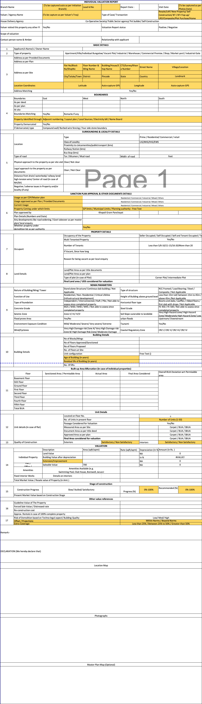
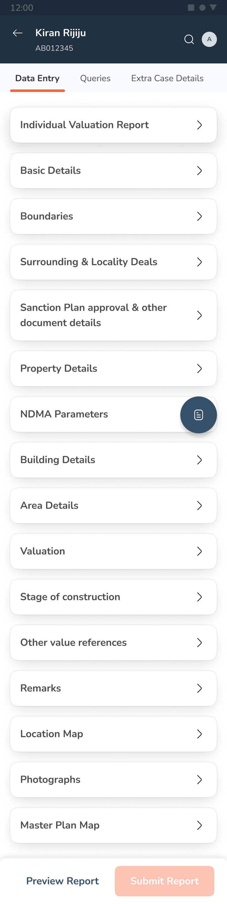
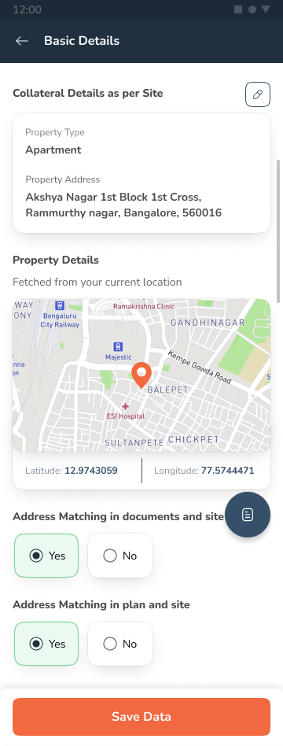
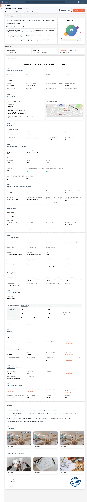

<!doctype html>
<html lang="en">
<head>
<meta charset="utf-8">
<title>Chintan Jat — Infinite Canvas</title>
<meta name="viewport" content="width=device-width, initial-scale=1">
<link rel="preconnect" href="https://fonts.googleapis.com">
<link rel="preconnect" href="https://fonts.gstatic.com" crossorigin>
<link href="https://fonts.googleapis.com/css2?family=Inter:ital,wght@0,300;0,400;0,500;0,600;0,700;0,800;1,400;1,500;1,700&display=swap" rel="stylesheet">
<style>
/* ============================================================
   Chintan Jat — Infinite Canvas Portfolio
   Cool neutrals, serif+sans+mono pairing
   ============================================================ */

:root {
  --bg: oklch(0.96 0.008 240);
  --bg-2: oklch(0.93 0.012 240);
  --bg-3: oklch(0.89 0.014 238);
  --ink: oklch(0.22 0.02 250);
  --ink-2: oklch(0.38 0.02 248);
  --ink-3: oklch(0.55 0.02 245);
  --line: oklch(0.82 0.018 235);
  --line-soft: oklch(0.88 0.014 238);
  --accent: oklch(0.58 0.13 235);
  --accent-soft: oklch(0.85 0.05 235);
  --warn: oklch(0.72 0.12 55);
  --ok: oklch(0.68 0.11 155);
  --paper: oklch(0.98 0.005 240);
  --shadow-sm: 0 1px 2px oklch(0.3 0.04 245 / 0.06), 0 2px 6px oklch(0.3 0.04 245 / 0.04);
  --shadow-md: 0 2px 6px oklch(0.3 0.04 245 / 0.08), 0 10px 30px oklch(0.3 0.04 245 / 0.07);
  --shadow-lg: 0 4px 12px oklch(0.3 0.04 245 / 0.10), 0 24px 60px oklch(0.3 0.04 245 / 0.12);
  --radius: 14px;
  --radius-lg: 22px;
  --f-serif: 'Inter', 'Helvetica Neue', Helvetica, Arial, sans-serif;
  --f-sans: 'Inter', 'Helvetica Neue', Helvetica, Arial, sans-serif;
  --f-mono: 'Inter', ui-monospace, 'SF Mono', Menlo, monospace;
}

* { box-sizing: border-box; }
html, body {
  margin: 0; padding: 0;
  height: 100%; width: 100%;
  overflow: hidden;
  background: var(--bg);
  color: var(--ink);
  font-family: var(--f-sans);
  -webkit-font-smoothing: antialiased;
  -moz-osx-font-smoothing: grayscale;
}

button { font-family: inherit; }

/* ---------- Canvas stage ---------- */
.stage {
  position: fixed; inset: 0;
  overflow: hidden;
  cursor: grab;
  background:
    radial-gradient(circle at 20% 15%, oklch(0.98 0.01 230) 0%, transparent 45%),
    radial-gradient(circle at 85% 80%, oklch(0.94 0.02 230) 0%, transparent 50%),
    var(--bg);
}
.stage.is-panning { cursor: grabbing; }

.canvas {
  position: absolute;
  top: 0; left: 0;
  width: 0; height: 0;
  transform-origin: 0 0;
  will-change: transform;
}

/* Parallax grid */
.grid-layer {
  position: fixed; inset: 0;
  pointer-events: none;
  opacity: 0.55;
}
.grid-dots {
  background-image: radial-gradient(circle, oklch(0.7 0.02 240 / 0.35) 1px, transparent 1.4px);
}
.grid-lines {
  background-image:
    linear-gradient(to right, oklch(0.75 0.02 240 / 0.08) 1px, transparent 1px),
    linear-gradient(to bottom, oklch(0.75 0.02 240 / 0.08) 1px, transparent 1px);
}

/* Drifting ambient dust */
.dust {
  position: fixed; inset: 0;
  pointer-events: none;
  opacity: 0.6;
}
.dust span {
  position: absolute;
  width: 3px; height: 3px; border-radius: 50%;
  background: oklch(0.55 0.08 235 / 0.4);
  animation: drift linear infinite;
}
@keyframes drift {
  0% { transform: translate(0,0); opacity: 0; }
  10% { opacity: 1; }
  90% { opacity: 1; }
  100% { transform: translate(40px,-80px); opacity: 0; }
}

/* ---------- Islands (content blocks on the canvas) ---------- */
.island {
  position: absolute;
  transform-origin: center;
}
.island.dragging { z-index: 50; }

/* generic card */
.card {
  background: var(--paper);
  border: 1px solid var(--line-soft);
  border-radius: var(--radius);
  box-shadow: var(--shadow-md);
  overflow: hidden;
  transition: transform .5s cubic-bezier(.2,.8,.2,1), box-shadow .4s ease, border-color .3s ease;
}
.card:hover { box-shadow: var(--shadow-lg); border-color: var(--line); }

.card.tape::before,
.card.tape::after {
  content: '';
  position: absolute;
  width: 64px; height: 18px;
  background: oklch(0.88 0.04 235 / 0.6);
  border: 1px solid oklch(0.78 0.05 235 / 0.4);
  top: -8px;
  box-shadow: 0 2px 6px oklch(0.3 0.04 245 / 0.08);
}
.card.tape::before { left: 24px; transform: rotate(-4deg); }
.card.tape::after { right: 24px; transform: rotate(3deg); }

/* Hero */
.hero {
  width: 820px;
  padding: 52px 56px 48px;
  position: relative;
}
.hero .eyebrow {
  font-family: var(--f-mono);
  font-size: 17px;
  text-transform: uppercase;
  letter-spacing: 0.14em;
  color: var(--ink-3);
  display: flex; gap: 18px; align-items: center;
  margin-bottom: 28px;
}
.hero .dot {
  width: 8px; height: 8px; border-radius: 50%;
  background: var(--ok);
  box-shadow: 0 0 0 4px oklch(0.68 0.11 155 / 0.18);
  animation: pulse 2.2s ease-in-out infinite;
}
@keyframes pulse {
  0%, 100% { box-shadow: 0 0 0 4px oklch(0.68 0.11 155 / 0.18); }
  50% { box-shadow: 0 0 0 8px oklch(0.68 0.11 155 / 0.05); }
}
.hero h1 {
  font-family: var(--f-serif);
  font-weight: 800;
  font-size: 96px;
  line-height: 0.95;
  letter-spacing: -0.035em;
  margin: 0 0 8px;
  color: var(--ink);
}
.hero h1 .ital {
  font-style: italic;
  color: var(--accent);
}
.hero h1 .thin {
  font-family: var(--f-sans);
  font-weight: 200;
  font-size: 0.82em;
  letter-spacing: -0.04em;
}
.hero .tag {
  font-family: var(--f-serif);
  font-style: italic;
  font-size: 28px;
  line-height: 1.35;
  color: var(--ink-2);
  max-width: 600px;
  margin: 28px 0 0;
}
.hero .tag em {
  font-style: normal;
  font-family: var(--f-sans);
  font-weight: 500;
  background: linear-gradient(to right, transparent, var(--accent-soft) 10%, var(--accent-soft) 90%, transparent);
  padding: 0 6px;
  color: var(--ink);
}
.hero .meta-row {
  display: flex; gap: 36px;
  margin-top: 44px;
  padding-top: 22px;
  border-top: 1px solid var(--line-soft);
  font-family: var(--f-mono);
  font-size: 17px;
  color: var(--ink-3);
  text-transform: uppercase;
  letter-spacing: 0.12em;
}
.hero .meta-row div strong {
  display: block;
  color: var(--ink);
  font-weight: 500;
  margin-top: 4px;
  font-family: var(--f-sans);
  text-transform: none;
  letter-spacing: 0;
  font-size: 17px;
}

/* coord label outside islands */
.coord {
  position: absolute;
  top: -22px; left: 0;
  font-family: var(--f-mono);
  font-size: 17px;
  color: var(--ink-3);
  letter-spacing: 0.08em;
  display: flex; gap: 10px; align-items: center;
  opacity: 0.7;
}
.coord::before {
  content: '';
  width: 10px; height: 1px;
  background: var(--ink-3);
}

/* About island */
.about {
  width: 580px;
  padding: 40px 44px;
}
.about h3 {
  font-family: var(--f-serif);
  font-style: italic;
  font-weight: 700;
  font-size: 34px;
  margin: 0 0 18px;
  color: var(--ink);
  line-height: 1.1;
  letter-spacing: -0.02em;
}
.about p {
  font-size: 19px;
  line-height: 1.7;
  color: var(--ink-2);
  margin: 0 0 18px;
}
.about p:last-child { margin-bottom: 0; }
.about .kbd {
  font-family: var(--f-mono);
  font-size: 17px;
  padding: 2px 8px;
  background: var(--bg-2);
  border: 1px solid var(--line);
  border-radius: 6px;
  color: var(--ink);
}

/* photo frame */
.photo-frame {
  width: 280px; height: 340px;
  padding: 14px 14px 36px;
  background: var(--paper);
  position: relative;
  transform: rotate(-2.5deg);
  transition: transform .5s cubic-bezier(.2,.8,.2,1);
}
.photo-frame:hover { transform: rotate(0deg) scale(1.03); }
.photo-frame .ph {
  width: 100%; height: 100%;
  background:
    repeating-linear-gradient(135deg,
      oklch(0.82 0.03 235) 0 6px,
      oklch(0.87 0.02 235) 6px 12px);
  border-radius: 4px;
  display: flex; align-items: center; justify-content: center;
  font-family: var(--f-mono);
  font-size: 17px;
  color: oklch(0.4 0.05 240);
  text-transform: uppercase;
  letter-spacing: 0.1em;
}
.photo-frame .caption {
  position: absolute;
  bottom: 8px; left: 0; right: 0;
  text-align: center;
  font-family: var(--f-serif);
  font-style: italic;
  font-size: 17px;
  color: var(--ink-2);
}

/* Section header */
.section-head {
  width: 640px;
  padding: 22px 28px;
  background: transparent;
  border: none;
  box-shadow: none;
}
.section-head .num {
  font-family: var(--f-mono);
  font-size: 17px;
  color: var(--ink-3);
  letter-spacing: 0.18em;
  text-transform: uppercase;
}
.section-head h2 {
  font-family: var(--f-serif);
  font-weight: 800;
  font-size: 60px;
  line-height: 1.02;
  margin: 8px 0 0;
  color: var(--ink);
  letter-spacing: -0.03em;
}
.section-head h2 em {
  font-style: italic;
  color: var(--accent);
}
.section-head .rule {
  margin-top: 18px;
  height: 1px;
  background: linear-gradient(to right, var(--ink-3), transparent);
}

/* Project card */
.project {
  width: 460px;
  padding: 0;
  cursor: pointer;
}

/* Compact variant — used in the horizontal filmstrip work row */
.project.compact { width: 310px; height: 445px; display: flex; flex-direction: column; }
.project.compact .thumb { height: 190px; flex-shrink: 0; }
.project.compact .thumb .badge { top: 12px; left: 12px; font-size: 17px; padding: 5px 11px; letter-spacing: 0.1em; }
.project.compact .thumb .ph { font-size: 17px; }
.project.compact .body { padding: 18px 20px 22px; flex: 1; display: flex; flex-direction: column; }
.project.compact .body .tags { display: none; }
.project.compact .body .tag { font-size: 17px; padding: 2px 7px; letter-spacing: 0.07em; }
.project.compact h4 { font-size: 22px; margin-bottom: 8px; line-height: 1.2; }
.project.compact .desc { font-size: 17px; line-height: 1.55; }
.project.compact .cta { margin-top: auto; padding-top: 12px; font-size: 17px; letter-spacing: 0.12em; }

.project .thumb {
  height: 280px;
  position: relative;
  overflow: hidden;
  border-bottom: 1px solid var(--line-soft);
}
.project .thumb .ph {
  position: absolute; inset: 0;
  background:
    repeating-linear-gradient(135deg,
      oklch(0.88 0.025 235) 0 8px,
      oklch(0.91 0.02 235) 8px 16px);
  display: flex; align-items: center; justify-content: center;
  font-family: var(--f-mono);
  font-size: 17px;
  color: oklch(0.4 0.05 240);
  letter-spacing: 0.1em;
  transition: transform .8s cubic-bezier(.2,.8,.2,1);
}
.project:hover .thumb .ph { transform: scale(1.04); }
.project .thumb .badge {
  position: absolute;
  top: 16px; left: 16px;
  font-family: var(--f-mono);
  font-size: 17px;
  padding: 6px 12px;
  background: oklch(0.18 0.02 245);
  color: oklch(0.98 0.005 240);
  border-radius: 999px;
  letter-spacing: 0.12em;
  text-transform: uppercase;
  font-weight: 500;
  box-shadow: 0 2px 8px oklch(0.2 0.04 245 / 0.35);
}
.project .body {
  padding: 24px 28px 28px;
}
.project .body .tags {
  display: flex; gap: 8px;
  margin-bottom: 12px;
  flex-wrap: wrap;
}
.project .body .tag {
  font-family: var(--f-mono);
  font-size: 17px;
  text-transform: uppercase;
  letter-spacing: 0.08em;
  color: var(--ink-3);
  padding: 3px 8px;
  border: 1px solid var(--line);
  border-radius: 999px;
}
.project h4 {
  font-family: var(--f-serif);
  font-weight: 700;
  font-size: 26px;
  line-height: 1.15;
  margin: 0 0 8px;
  color: var(--ink);
  letter-spacing: -0.02em;
}
.project h4 em { font-style: italic; color: var(--accent); }
.project .desc {
  font-size: 17px;
  line-height: 1.6;
  color: var(--ink-2);
  margin: 0;
}
.project .cta {
  margin-top: 18px;
  display: inline-flex; align-items: center; gap: 8px;
  font-family: var(--f-mono);
  font-size: 17px;
  letter-spacing: 0.14em;
  text-transform: uppercase;
  color: var(--accent);
  transition: gap .3s ease;
}
.project:hover .cta { gap: 14px; }

/* Timeline / experience */
.timeline {
  width: 560px;
  padding: 36px 40px;
}
.timeline h3 {
  font-family: var(--f-serif);
  font-style: italic;
  font-weight: 700;
  font-size: 32px;
  margin: 0 0 4px;
  color: var(--ink);
}
.timeline .sub {
  font-family: var(--f-mono);
  font-size: 17px;
  color: var(--ink-3);
  text-transform: uppercase;
  letter-spacing: 0.12em;
  margin-bottom: 26px;
}
.tline {
  position: relative;
  padding-left: 18px;
  border-left: 1px dashed var(--line);
}
.tline-item {
  position: relative;
  padding: 0 0 22px 22px;
}
.tline-item::before {
  content: '';
  position: absolute;
  left: -5px; top: 7px;
  width: 9px; height: 9px;
  background: var(--paper);
  border: 1.5px solid var(--accent);
  border-radius: 50%;
}
.tline-item .year {
  font-family: var(--f-mono);
  font-size: 17px;
  color: var(--ink-3);
  letter-spacing: 0.1em;
  margin-bottom: 2px;
}
.tline-item .role {
  font-family: var(--f-serif);
  font-size: 22px;
  color: var(--ink);
  line-height: 1.2;
}
.tline-item .co {
  font-size: 17px;
  color: var(--ink-2);
  margin-top: 4px;
  line-height: 1.5;
}

/* Sticky note */
.sticky {
  width: 280px;
  padding: 24px 26px 30px;
  background: oklch(0.93 0.04 235);
  border: 1px solid oklch(0.82 0.05 235);
  box-shadow: var(--shadow-md);
  transform: rotate(1.8deg);
  font-family: var(--f-serif);
  font-style: italic;
  font-size: 20px;
  line-height: 1.4;
  color: var(--ink);
  border-radius: 2px;
}
.sticky .attrib {
  display: block;
  margin-top: 14px;
  font-family: var(--f-mono);
  font-style: normal;
  font-size: 17px;
  color: var(--ink-3);
  letter-spacing: 0.1em;
  text-transform: uppercase;
}

/* Contact / footer island */
.contact {
  width: 620px;
  padding: 46px 48px;
}
.contact h3 {
  font-family: var(--f-serif);
  font-weight: 800;
  font-size: 52px;
  line-height: 1.02;
  margin: 0 0 6px;
  color: var(--ink);
  letter-spacing: -0.03em;
}
.contact h3 em { font-style: italic; color: var(--accent); }
.contact p {
  font-family: var(--f-serif);
  font-style: italic;
  font-size: 24px;
  color: var(--ink-2);
  margin: 14px 0 32px;
  max-width: 480px;
}
.contact-links {
  display: grid;
  grid-template-columns: 1fr 1fr;
  gap: 0;
  border-top: 1px solid var(--line-soft);
}
.clink {
  padding: 20px 0;
  border-bottom: 1px solid var(--line-soft);
  display: flex; align-items: center; justify-content: space-between;
  text-decoration: none;
  color: var(--ink);
  font-family: var(--f-sans);
  font-size: 18px;
  font-weight: 500;
  cursor: pointer;
  transition: padding .3s ease, color .3s ease;
}
.clink:nth-child(odd) { padding-right: 24px; border-right: 1px solid var(--line-soft); }
.clink:nth-child(even) { padding-left: 24px; }
.clink:hover { color: var(--accent); padding-left: 10px; }
.clink:nth-child(even):hover { padding-left: 34px; }
.clink .arrow {
  font-family: var(--f-mono);
  font-size: 17px;
  transition: transform .3s ease;
}
.clink:hover .arrow { transform: translate(4px,-4px); }
.clink .label {
  font-family: var(--f-mono);
  font-size: 17px;
  color: var(--ink-3);
  letter-spacing: 0.14em;
  text-transform: uppercase;
  display: block;
  margin-bottom: 5px;
}

/* Stat ticker island */
.stats {
  width: 420px;
  padding: 28px 32px;
  display: grid;
  grid-template-columns: 1fr 1fr;
  gap: 28px 24px;
}
.stats .s-num {
  font-family: var(--f-serif);
  font-weight: 700;
  font-size: 38px;
  line-height: 1;
  color: var(--ink);
  letter-spacing: -0.03em;
}
.stats .s-num em { font-style: italic; color: var(--accent); }
.stats .s-lab {
  font-family: var(--f-mono);
  font-size: 17px;
  color: var(--ink-3);
  letter-spacing: 0.12em;
  text-transform: uppercase;
  margin-top: 6px;
}

/* Toolset island */
.tools {
  width: 400px;
  padding: 28px 30px;
}
.tools h4 {
  font-family: var(--f-mono);
  font-size: 17px;
  color: var(--ink-3);
  letter-spacing: 0.14em;
  text-transform: uppercase;
  margin: 0 0 16px;
  font-weight: 500;
}
.tools ul {
  list-style: none; padding: 0; margin: 0;
  display: flex; flex-wrap: wrap; gap: 8px;
}
.tools ul li {
  font-family: var(--f-sans);
  font-size: 17px;
  padding: 8px 14px;
  background: var(--bg-2);
  border: 1px solid var(--line-soft);
  border-radius: 999px;
  color: var(--ink);
}
.tools ul li.accent {
  background: var(--accent-soft);
  border-color: oklch(0.7 0.1 235);
  color: oklch(0.3 0.12 235);
}

/* ---------- Case study — full-screen document ---------- */
.cs-fullscreen {
  position: fixed; inset: 0;
  z-index: 100;
  display: grid;
  grid-template-columns: 300px 1fr;
  background: var(--paper);
  animation: cs-zoom .45s cubic-bezier(.16,1,.3,1) forwards;
}
@keyframes cs-zoom {
  from { opacity: 0; transform: scale(0.97); }
  to   { opacity: 1; transform: scale(1); }
}

/* Sidebar */
.cs-sidebar {
  position: sticky; top: 0;
  height: 100vh;
  display: flex; flex-direction: column;
  padding: 36px 32px;
  border-right: 1px solid var(--line-soft);
  background: var(--bg);
  overflow: hidden;
}
.cs-back {
  display: inline-flex; align-items: center; gap: 8px;
  font-family: var(--f-mono);
  font-size: 17px; letter-spacing: 0.12em; text-transform: uppercase;
  color: var(--ink-3); background: none; border: none; cursor: pointer;
  padding: 0; margin-bottom: 40px;
  transition: color .2s ease, gap .2s ease;
  text-align: left;
}
.cs-back:hover { color: var(--ink); gap: 14px; }
.cs-sidebar-num {
  font-family: var(--f-mono); font-size: 17px;
  color: var(--accent); letter-spacing: 0.16em;
  text-transform: uppercase; margin-bottom: 10px;
}
.cs-sidebar h2 {
  font-family: var(--f-serif); font-weight: 700;
  font-size: 26px; line-height: 1.2; letter-spacing: -0.01em;
  color: var(--ink); margin: 0 0 28px;
}
.cs-sidebar h2 em { font-style: italic; color: var(--accent); }
.cs-meta-list {
  display: flex; flex-direction: column; gap: 14px;
}
.cs-meta-item {
  font-family: var(--f-mono); font-size: 17px;
  color: var(--ink-3); letter-spacing: 0.12em; text-transform: uppercase;
}
.cs-meta-item strong {
  display: block; font-family: var(--f-sans); font-weight: 500;
  font-size: 17px; color: var(--ink); margin-top: 3px;
  text-transform: none; letter-spacing: 0;
}
.cs-toc {
  margin-top: auto; padding-top: 24px;
  border-top: 1px solid var(--line-soft);
  display: flex; flex-direction: column; gap: 2px;
}
.cs-toc-btn {
  font-family: var(--f-mono); font-size: 17px;
  color: var(--ink-3); letter-spacing: 0.1em; text-transform: uppercase;
  padding: 7px 0; cursor: pointer; border: none; background: none;
  text-align: left; display: flex; align-items: center; gap: 10px;
  transition: color .2s ease;
}
.cs-toc-btn::before {
  content: ''; width: 14px; height: 1px;
  background: currentColor; flex-shrink: 0;
  transition: width .25s ease;
}
.cs-toc-btn:hover, .cs-toc-btn.active { color: var(--ink); }
.cs-toc-btn.active::before { width: 24px; }
.cs-proj-nav {
  display: flex; gap: 8px; margin-top: 20px;
}
.cs-proj-btn {
  flex: 1; padding: 10px 0;
  font-family: var(--f-mono); font-size: 17px;
  letter-spacing: 0.1em; text-transform: uppercase;
  background: var(--paper); border: 1px solid var(--line);
  border-radius: 8px; cursor: pointer; color: var(--ink-2);
  transition: background .2s ease, color .2s ease, border-color .2s ease;
}
.cs-proj-btn:hover { background: var(--ink); color: var(--paper); border-color: var(--ink); }

/* Content scrollable area */
.cs-content { overflow-y: auto; height: 100vh; }

/* Scroll progress bar */
.cs-progress {
  position: sticky; top: 0; left: 0; right: 0;
  height: 2px; background: var(--line-soft); z-index: 10;
}
.cs-progress-fill {
  height: 100%; background: var(--accent);
  transition: width .08s linear;
}

/* Content hero */
.cs-hero {
  padding: 80px 100px 60px;
  border-bottom: 1px solid var(--line-soft);
  background: linear-gradient(to bottom, var(--bg), var(--paper));
}
.cs-hero .cs-eyebrow {
  font-family: var(--f-mono); font-size: 17px;
  color: var(--ink-3); letter-spacing: 0.14em;
  text-transform: uppercase; display: flex; gap: 20px;
  margin-bottom: 28px;
}
.cs-hero h1 {
  font-family: var(--f-serif); font-weight: 800;
  font-size: 68px; line-height: 1.02; letter-spacing: -0.03em;
  margin: 0 0 32px; color: var(--ink);
}
.cs-hero h1 em { font-style: italic; color: var(--accent); }
.cs-hero .cs-lede {
  font-family: var(--f-serif); font-style: italic;
  font-size: 26px; line-height: 1.4; color: var(--ink-2);
  max-width: 680px; margin: 0;
}

/* Content sections */
.cs-section {
  padding: 80px 100px;
  border-bottom: 1px solid var(--line-soft);
}
.cs-section:last-child { border-bottom: none; }
.cs-section .cs-num {
  font-family: var(--f-mono); font-size: 17px;
  color: var(--accent); letter-spacing: 0.16em;
  text-transform: uppercase; margin-bottom: 12px;
}
.cs-section h2 {
  font-family: var(--f-serif); font-weight: 800;
  font-size: 42px; line-height: 1.08; letter-spacing: -0.02em;
  margin: 0 0 36px; color: var(--ink);
}
.cs-section h2 em { font-style: italic; color: var(--accent); }
.cs-section p {
  font-size: 18px; line-height: 1.7; color: var(--ink-2);
  max-width: 680px; margin: 0 0 20px;
}
.cs-section .cs-big {
  font-family: var(--f-serif); font-style: italic;
  font-size: 30px; line-height: 1.4; color: var(--ink);
  max-width: 680px; margin: 36px 0;
  padding-left: 28px; border-left: 2px solid var(--accent);
}

.cs-grid2 {
  display: grid; grid-template-columns: 1fr 1fr;
  gap: 24px; margin-top: 36px;
}
.cs-tile {
  padding: 28px;
  background: var(--bg); border: 1px solid var(--line-soft);
  border-radius: 12px;
}
.cs-tile h4 {
  font-family: var(--f-mono); font-size: 17px;
  color: var(--accent); text-transform: uppercase;
  letter-spacing: 0.12em; margin: 0 0 10px; font-weight: 500;
}
.cs-tile p { font-size: 17px; margin: 0; line-height: 1.6; color: var(--ink-2); }

.cs-ph {
  width: 100%; height: 480px;
  background: repeating-linear-gradient(135deg, oklch(0.9 0.02 235) 0 8px, oklch(0.93 0.015 235) 8px 16px);
  border-radius: 14px;
  display: flex; align-items: center; justify-content: center;
  font-family: var(--f-mono); font-size: 17px;
  color: oklch(0.4 0.05 240); letter-spacing: 0.1em;
  margin: 36px 0; text-transform: uppercase;
  border: 1px solid var(--line-soft);
}
.cs-ph.tall { height: 580px; }
.cs-ph.short { height: 300px; }

.cs-outcomes {
  display: grid; grid-template-columns: repeat(3, 1fr);
  gap: 24px; margin-top: 36px;
}
.cs-outcome {
  padding: 40px 28px;
  background: var(--paper); border: 1px solid var(--line);
  border-radius: 16px;
}
.cs-outcome .big {
  font-family: var(--f-serif); font-weight: 700; font-size: 48px;
  line-height: 1; color: var(--ink); letter-spacing: -0.03em;
}
.cs-outcome .big em { font-style: italic; color: var(--accent); }
.cs-outcome .lab {
  font-family: var(--f-mono); font-size: 17px;
  color: var(--ink-3); letter-spacing: 0.12em;
  text-transform: uppercase; margin-top: 12px;
}

/* ---------- Extended case study (Parakh) ---------- */
.cs-shot{width:100%;aspect-ratio:16/9;border:1.5px dashed var(--line);border-radius:12px;background:transparent;display:flex;align-items:center;justify-content:center;text-align:center;padding:24px;font-family:var(--f-mono);font-size: 17px;letter-spacing:0.1em;color:var(--ink-3);text-transform:uppercase;margin:32px 0;line-height:1.6}
.cs-shot span{max-width:520px}
.cs-meta-pills{display:flex;flex-wrap:wrap;gap:8px;margin-top:32px}
.cs-meta-pills .pill{font-family:var(--f-mono);font-size: 17px;letter-spacing:0.08em;text-transform:uppercase;color:var(--ink-2);padding:7px 14px;border:1px solid var(--line);border-radius:999px;background:var(--paper)}
.cs-meta-pills .pill strong{color:var(--ink);font-weight:500;margin-left:6px;font-family:var(--f-sans);text-transform:none;letter-spacing:0;font-size: 17px}
.cs-cols3{display:grid;grid-template-columns:repeat(3,1fr);gap:20px;margin-top:28px}
.cs-cols2{display:grid;grid-template-columns:1fr 1fr;gap:24px;margin-top:28px}
.cs-cols3 .cs-tile h4,.cs-cols2 .cs-tile h4{margin-bottom:12px}
.cs-cols3 .cs-tile p,.cs-cols2 .cs-tile p{font-size: 17px}
.cs-numlist{counter-reset:ins;display:flex;flex-direction:column;gap:20px;margin-top:28px}
.cs-numcard{padding:28px 30px;background:var(--paper);border:1px solid var(--line-soft);border-radius:14px;position:relative}
.cs-numcard .n{font-family:var(--f-mono);font-size: 17px;letter-spacing:0.14em;color:var(--accent);text-transform:uppercase;margin-bottom:8px}
.cs-numcard h5{font-family:var(--f-serif);font-weight:400;font-size:24px;line-height:1.25;margin:0 0 10px;color:var(--ink);letter-spacing:-0.01em}
.cs-numcard p{font-size: 17px;color:var(--ink-2);margin:0;line-height:1.6;max-width:none}
.cs-frame{padding:32px 34px;background:var(--bg);border:1px solid var(--line-soft);border-radius:14px;margin-top:20px}
.cs-frame .kicker{font-family:var(--f-mono);font-size: 17px;letter-spacing:0.14em;text-transform:uppercase;color:var(--ink-3);margin-bottom:12px}
.cs-frame .stmt{font-family:var(--f-serif);font-style:italic;font-size:26px;line-height:1.35;color:var(--ink);margin:0}
.cs-list{margin:16px 0 0;padding:0;list-style:none;display:flex;flex-direction:column;gap:10px}
.cs-list li{font-size: 17px;color:var(--ink-2);line-height:1.55;padding-left:20px;position:relative;max-width:680px}
.cs-list li::before{content:'';position:absolute;left:0;top:11px;width:8px;height:1px;background:var(--accent)}
.cs-tradeoff{padding:28px 30px;background:var(--paper);border:1px solid var(--line-soft);border-radius:14px;margin-top:20px}
.cs-tradeoff .n{font-family:var(--f-mono);font-size: 17px;letter-spacing:0.14em;color:var(--accent);text-transform:uppercase;margin-bottom:8px}
.cs-tradeoff h5{font-family:var(--f-serif);font-weight:400;font-size:24px;line-height:1.25;margin:0 0 18px;color:var(--ink);letter-spacing:-0.01em}
.cs-tradeoff .grid{display:grid;grid-template-columns:1fr 1fr;gap:20px}
.cs-tradeoff .cell .lab{font-family:var(--f-mono);font-size: 17px;letter-spacing:0.14em;color:var(--ink-3);text-transform:uppercase;margin-bottom:6px}
.cs-tradeoff .cell p{font-size: 17px;color:var(--ink-2);margin:0;line-height:1.55}
.cs-tradeoff .note{margin-top:16px;padding-top:16px;border-top:1px solid var(--line-soft);font-size: 17px;color:var(--ink-3);font-style:italic}
.cs-subhead{font-family:var(--f-mono);font-size: 17px;letter-spacing:0.16em;text-transform:uppercase;color:var(--accent);margin:36px 0 10px}
.cs-quote{padding:36px 40px;margin-top:28px;background:var(--bg);border-left:2px solid var(--accent);border-radius:0 12px 12px 0}
.cs-quote p{font-family:var(--f-serif);font-style:italic;font-size:24px;line-height:1.45;color:var(--ink);margin:0;max-width:none}
.cs-quote .who{display:block;margin-top:16px;font-family:var(--f-mono);font-size: 17px;letter-spacing:0.12em;text-transform:uppercase;color:var(--ink-3);font-style:normal}
.cs-savings{margin-top:28px;padding:28px 30px;border:1px solid var(--line-soft);border-radius:14px;background:var(--paper)}
.cs-savings h5{font-family:var(--f-mono);font-size: 17px;letter-spacing:0.14em;text-transform:uppercase;color:var(--ink);margin:0 0 14px;font-weight:500}
@media (max-width:900px){.cs-cols3,.cs-cols2,.cs-tradeoff .grid{grid-template-columns:1fr}.cs-quote p{font-size:19px}.cs-frame .stmt{font-size:20px}}

/* ---------- Technical Verification case study visuals ---------- */
.tv-ba{display:grid;grid-template-columns:1fr 1fr;gap:24px;margin-top:32px;align-items:start}
@media(max-width:1200px){.tv-ba{grid-template-columns:1fr}.cs-cols3{grid-template-columns:1fr 1fr}.cs-cols2{grid-template-columns:1fr}}
@media(max-width:760px){.cs-cols3{grid-template-columns:1fr}}
.tv-panel{border:1px solid var(--line-soft);border-radius:16px;overflow:hidden;background:var(--bg);display:flex;flex-direction:column}
.tv-panel .cap{display:flex;align-items:center;gap:10px;padding:13px 16px;border-bottom:1px solid var(--line-soft);font-family:var(--f-mono);font-size:15px;letter-spacing:0.1em;text-transform:uppercase;color:var(--ink-3)}
.tv-pill-b{font-family:var(--f-mono);font-size:12px;letter-spacing:0.1em;text-transform:uppercase;color:var(--warn);border:1px solid var(--warn);border-radius:999px;padding:2px 9px}
.tv-pill-a{font-family:var(--f-mono);font-size:12px;letter-spacing:0.1em;text-transform:uppercase;color:var(--ok);border:1px solid var(--ok);border-radius:999px;padding:2px 9px}
.tv-scroll{height:620px;overflow:auto;background:oklch(0.99 0 0)}
.tv-scroll img{width:100%;display:block}
.tv-panel-pad{padding:26px 20px;display:flex;justify-content:center;align-items:flex-start;flex:1;background:linear-gradient(to bottom,var(--bg),var(--bg-2))}
.tv-scroll-phone{height:620px;overflow:auto;background:linear-gradient(to bottom,var(--bg),var(--bg-2));display:flex;justify-content:center;padding:22px}
.tv-scroll-phone img{width:280px;height:auto;border-radius:26px;box-shadow:var(--shadow-lg);align-self:flex-start;border:1px solid var(--line-soft)}
.tv-shot-phone{width:280px;height:auto;border-radius:26px;box-shadow:var(--shadow-lg);border:1px solid var(--line-soft);display:block;flex-shrink:0}

/* phone */
.tv-phones{display:flex;gap:30px;justify-content:center;flex-wrap:wrap;margin-top:16px}
.tv-phone{width:296px;background:#0e1f33;border-radius:40px;padding:9px;box-shadow:var(--shadow-lg);flex-shrink:0}
.tv-scr{background:#eef1f4;border-radius:32px;overflow:hidden;height:604px;display:flex;flex-direction:column;position:relative}
.tv-hd{background:#14293f;color:#fff;padding:15px 16px 0}
.tv-hd .top{display:flex;align-items:center;gap:12px}
.tv-hd .top .bk{font-size:20px;opacity:.9}
.tv-hd .top .who{flex:1}
.tv-hd .top .who .nm{font-weight:600;font-size:16px;line-height:1.15}
.tv-hd .top .who .id{font-size:12px;color:#9fb0c4;font-family:var(--f-mono);letter-spacing:.06em;margin-top:2px}
.tv-hd .top .ic{width:30px;height:30px;border-radius:50%;display:flex;align-items:center;justify-content:center;font-size:16px;color:#dfe6ee}
.tv-hd .av{width:30px;height:30px;border-radius:50%;background:#fff;color:#14293f;display:flex;align-items:center;justify-content:center;font-weight:600;font-size:13px}
.tv-tabs{display:flex;gap:22px;margin-top:16px;font-size:13.5px}
.tv-tabs .tb{padding:10px 0;color:#9fb0c4}
.tv-tabs .tb.on{color:#fff;border-bottom:3px solid #f26430;font-weight:600}
.tv-body{flex:1;overflow:auto;padding:14px;display:flex;flex-direction:column;gap:11px;background:#eef1f4}
.tv-card{background:#fff;border-radius:12px;padding:15px 16px;display:flex;align-items:center;gap:10px;box-shadow:0 1px 3px rgba(16,30,50,.07)}
.tv-card .lbl{flex:1;font-weight:600;font-size:14.5px;color:#1e2b3a;line-height:1.25}
.tv-card .chev{color:#9aa7b5;font-size:20px}
.tv-fab{position:absolute;right:16px;bottom:78px;width:52px;height:52px;border-radius:50%;background:#14293f;color:#fff;display:flex;align-items:center;justify-content:center;box-shadow:var(--shadow-md);font-size:20px}
.tv-foot{display:flex;align-items:center;gap:12px;padding:12px 14px;background:#fff;border-top:1px solid #e2e7ec}
.tv-foot .prev{flex:1;text-align:center;color:#14293f;font-weight:600;font-size:14px}
.tv-foot .sub{flex:1;text-align:center;background:#f7c3ad;color:#fff;font-weight:600;font-size:14px;padding:12px;border-radius:10px}
.tv-field{background:#fff;border-radius:12px;padding:12px 14px;box-shadow:0 1px 3px rgba(16,30,50,.05)}
.tv-field .fl{font-size:11px;font-family:var(--f-mono);letter-spacing:.1em;text-transform:uppercase;color:#8492a4;margin-bottom:6px}
.tv-field .fv{font-size:14.5px;color:#1e2b3a;font-weight:500;line-height:1.35}
.tv-field.geo{border:1.5px solid #f26430;background:#fff7f3}
.tv-geo-badge{margin-top:9px;display:inline-flex;align-items:center;gap:6px;background:#f26430;color:#fff;font-size:10.5px;font-family:var(--f-mono);letter-spacing:.07em;text-transform:uppercase;padding:4px 10px;border-radius:999px}
.tv-seg{display:flex;border:1px solid #d7dee6;border-radius:8px;overflow:hidden;margin-top:2px}
.tv-seg span{flex:1;text-align:center;padding:9px;font-size:13px;color:#5a6b7d}
.tv-seg span.on{background:#14293f;color:#fff;font-weight:600}
.tv-primary{margin-top:2px;background:#f26430;color:#fff;text-align:center;font-weight:600;padding:13px;border-radius:10px;font-size:14.5px}

/* browser frame for BTM approver */
.tv-browser{border:1px solid var(--line);border-radius:14px;overflow:hidden;background:var(--paper);box-shadow:var(--shadow-md);margin-top:28px}
.tv-browser .bar{display:flex;gap:7px;align-items:center;padding:11px 14px;border-bottom:1px solid var(--line-soft);background:var(--bg)}
.tv-browser .bar .d{width:11px;height:11px;border-radius:50%}
.tv-browser .bar .addr{margin-left:14px;font-family:var(--f-mono);font-size:13px;color:var(--ink-3);background:var(--paper);border:1px solid var(--line-soft);border-radius:6px;padding:5px 14px}
.tv-browser .win{height:560px;overflow:auto}
.tv-browser .win img{width:100%;display:block}

/* auto-signed report visual */
.tv-sign{display:flex;align-items:center;gap:36px;flex-wrap:wrap;margin-top:24px;padding:28px 32px;background:var(--paper);border:1px solid var(--line-soft);border-radius:14px}
.tv-sign .sigwrap{flex:1;min-width:220px}
.tv-sign .sig{font-family:var(--f-serif);font-style:italic;font-size:34px;color:var(--ink);line-height:1;border-bottom:1px solid var(--line);padding-bottom:10px;display:inline-block}
.tv-sign .sigcap{font-family:var(--f-mono);font-size:12px;letter-spacing:.1em;text-transform:uppercase;color:var(--ink-3);margin-top:10px}
.tv-stamp{width:104px;height:104px;border-radius:50%;border:3px double #2f6fb0;color:#2f6fb0;display:flex;flex-direction:column;align-items:center;justify-content:center;text-align:center;font-family:var(--f-mono);font-size:10px;letter-spacing:.16em;text-transform:uppercase;font-weight:700;transform:rotate(-11deg);opacity:.92;flex-shrink:0;line-height:1.5}

/* one-button start */
.tv-startbtn{display:inline-flex;align-items:center;gap:14px;background:var(--ink);color:var(--paper);padding:18px 30px;border-radius:14px;font-family:var(--f-sans);font-weight:600;font-size:19px;box-shadow:var(--shadow-md)}
.tv-startbtn .plus{width:26px;height:26px;border-radius:50%;background:var(--accent);display:flex;align-items:center;justify-content:center;font-size:18px}

/* vendor routing */
.tv-vlist{display:flex;flex-direction:column;gap:10px;margin-top:16px}
.tv-vrow{display:flex;align-items:center;gap:16px;padding:14px 18px;border:1px solid var(--line-soft);border-radius:12px;background:var(--paper)}
.tv-vrow.top{border-color:var(--accent);background:var(--accent-soft)}
.tv-vrow .rank{font-family:var(--f-mono);color:var(--ink-3);width:22px;font-size:15px}
.tv-vrow .vn{flex:1;font-weight:600;color:var(--ink);font-size:16px}
.tv-vrow .vn small{display:block;font-weight:400;color:var(--ink-3);font-size:13px;margin-top:2px}
.tv-vrow .vm{font-family:var(--f-mono);font-size:13px;color:var(--ink-2);text-align:right;line-height:1.5}
.tv-vrow.top .vm{color:var(--ink)}
.tv-pick{font-family:var(--f-mono);font-size:11px;letter-spacing:.12em;text-transform:uppercase;color:var(--accent)}

/* before/after table */
.tv-table{width:100%;border-collapse:collapse;margin-top:12px}
.tv-table th,.tv-table td{text-align:left;padding:14px 18px;border-bottom:1px solid var(--line-soft);font-size:15px;vertical-align:top;line-height:1.5}
.tv-table th{font-family:var(--f-mono);font-size:12px;letter-spacing:.1em;text-transform:uppercase;color:var(--ink-3)}
.tv-table td.dim{color:var(--ink-3)}
.tv-table td.hi{color:var(--ink);font-weight:500}
.tv-table td:first-child{font-family:var(--f-mono);font-size:12px;letter-spacing:.08em;text-transform:uppercase;color:var(--accent)}

/* focus chip on emphasized moves */
.tv-focus{border-color:var(--accent)}
.tv-chip{display:inline-block;font-family:var(--f-mono);font-size:11px;letter-spacing:.12em;text-transform:uppercase;color:var(--accent);border:1px solid var(--accent);border-radius:999px;padding:3px 11px;margin-bottom:12px}
.tv-note{margin-top:20px;font-family:var(--f-mono);font-size:13px;letter-spacing:.04em;color:var(--ink-3);padding:14px 18px;border:1px dashed var(--line);border-radius:10px;background:var(--bg)}
.tv-note strong{color:var(--ink-2);font-weight:600}

/* ---------- Password gate ---------- */
.gate{position:fixed;inset:0;z-index:200;display:flex;align-items:center;justify-content:center;background:radial-gradient(circle at 30% 20%, oklch(0.97 0.01 235), var(--bg));font-family:var(--f-sans);padding:20px}
.gate-card{width:min(420px,92vw);background:var(--paper);border:1px solid var(--line);border-radius:var(--radius-lg);box-shadow:var(--shadow-lg);padding:44px 40px}
.gate-eyebrow{font-family:var(--f-mono);font-size:13px;letter-spacing:.16em;text-transform:uppercase;color:var(--ink-3);display:flex;gap:12px;align-items:center;margin-bottom:22px}
.gate .bdot{width:8px;height:8px;border-radius:50%;background:var(--accent);box-shadow:0 0 0 3px oklch(0.58 0.13 235 / .18)}
.gate h1{font-family:var(--f-serif);font-weight:800;font-size:34px;letter-spacing:-.02em;margin:0 0 8px;color:var(--ink)}
.gate h1 em{font-style:italic;color:var(--accent)}
.gate p{font-size:15px;line-height:1.6;color:var(--ink-2);margin:0 0 26px}
.gate form{display:flex;flex-direction:column;gap:12px}
.gate input{font-family:var(--f-sans);font-size:16px;padding:14px 16px;border:1px solid var(--line);border-radius:12px;background:var(--bg);color:var(--ink);outline:none;transition:border-color .2s ease}
.gate input:focus{border-color:var(--accent)}
.gate .err{font-family:var(--f-mono);font-size:13px;color:var(--warn);letter-spacing:.03em;min-height:16px}
.gate button{font-family:var(--f-mono);font-size:14px;letter-spacing:.12em;text-transform:uppercase;padding:14px;border:1px solid var(--ink);background:var(--ink);color:var(--paper);border-radius:12px;cursor:pointer;transition:background .2s ease,border-color .2s ease}
.gate button:hover{background:var(--accent);border-color:var(--accent)}

/* ---------- Chrome overlays ---------- */
.topbar {
  position: fixed;
  top: 20px; left: 20px; right: 20px;
  display: flex; justify-content: space-between; align-items: center;
  z-index: 30;
  pointer-events: none;
}
.topbar > * { pointer-events: auto; }
.brand {
  font-family: var(--f-mono);
  font-size: 17px;
  color: var(--ink);
  letter-spacing: 0.14em;
  text-transform: uppercase;
  display: flex; align-items: center; gap: 10px;
  background: oklch(0.98 0.005 240 / 0.7);
  backdrop-filter: blur(8px);
  padding: 10px 16px;
  border: 1px solid var(--line-soft);
  border-radius: 999px;
}
.resume-btn {
  display: inline-flex; align-items: center; gap: 8px;
  font-family: var(--f-mono);
  font-size: 17px;
  color: var(--paper);
  background: var(--ink);
  letter-spacing: 0.14em;
  text-transform: uppercase;
  padding: 10px 16px;
  border: 1px solid var(--ink);
  border-radius: 999px;
  text-decoration: none;
  cursor: pointer;
  transition: background .2s ease, gap .2s ease, transform .2s ease;
  box-shadow: var(--shadow-sm);
}
.resume-btn:hover { background: var(--accent); border-color: var(--accent); gap: 12px; }
.resume-btn .rdown { font-size: 17px; transition: transform .3s ease; }
.resume-btn:hover .rdown { transform: translateY(2px); }
@media (max-width: 900px) {
  .resume-btn { font-size: 17px; padding: 8px 12px; letter-spacing: 0.1em; }
  .resume-btn .rlabel-full { display: none; }
}

.brand .bdot {
  width: 8px; height: 8px; border-radius: 50%;
  background: var(--accent);
  box-shadow: 0 0 0 3px oklch(0.58 0.13 235 / 0.18);
}
.section-jumps {
  display: flex; gap: 4px;
  background: oklch(0.98 0.005 240 / 0.7);
  backdrop-filter: blur(8px);
  padding: 6px;
  border: 1px solid var(--line-soft);
  border-radius: 999px;
}
.section-jumps button {
  font-family: var(--f-mono);
  font-size: 17px;
  letter-spacing: 0.12em;
  text-transform: uppercase;
  border: none;
  background: transparent;
  color: var(--ink-2);
  padding: 8px 14px;
  border-radius: 999px;
  cursor: pointer;
  transition: background .2s ease, color .2s ease;
}
.section-jumps button:hover { color: var(--ink); background: var(--bg-2); }
.section-jumps button.active {
  background: var(--ink);
  color: var(--paper);
}

/* Zoom controls */
.zoom-ctrl {
  position: fixed;
  bottom: 24px; right: 24px;
  display: flex; flex-direction: column;
  background: oklch(0.98 0.005 240 / 0.85);
  backdrop-filter: blur(8px);
  border: 1px solid var(--line-soft);
  border-radius: 12px;
  overflow: hidden;
  z-index: 30;
  box-shadow: var(--shadow-sm);
}
.zoom-ctrl button {
  width: 40px; height: 40px;
  border: none;
  background: transparent;
  color: var(--ink);
  font-size: 17px;
  cursor: pointer;
  border-bottom: 1px solid var(--line-soft);
  font-family: var(--f-mono);
  transition: background .2s ease;
}
.zoom-ctrl button:last-child { border-bottom: none; }
.zoom-ctrl button:hover { background: var(--bg-2); }
.zoom-ctrl .lvl {
  font-family: var(--f-mono);
  font-size: 17px;
  color: var(--ink-3);
  height: 28px;
  display: flex; align-items: center; justify-content: center;
  background: var(--bg-2);
}

/* Minimap */
.minimap {
  position: fixed;
  bottom: 24px; left: 24px;
  width: 220px; height: 140px;
  background: oklch(0.98 0.005 240 / 0.85);
  backdrop-filter: blur(8px);
  border: 1px solid var(--line-soft);
  border-radius: 10px;
  overflow: hidden;
  z-index: 30;
  box-shadow: var(--shadow-sm);
}
.minimap .mm-label {
  position: absolute;
  top: 6px; left: 10px;
  font-family: var(--f-mono);
  font-size: 17px;
  color: var(--ink-3);
  letter-spacing: 0.14em;
  text-transform: uppercase;
  pointer-events: none;
  z-index: 2;
}
.minimap .mm-canvas {
  position: absolute; inset: 0;
}
.minimap .mm-dot {
  position: absolute;
  border-radius: 2px;
  background: oklch(0.7 0.04 240);
}
.minimap .mm-dot.accent { background: var(--accent); }
.minimap .mm-view {
  position: absolute;
  border: 1.5px solid var(--accent);
  background: oklch(0.58 0.13 235 / 0.1);
  border-radius: 3px;
  pointer-events: none;
}

/* Tweaks panel */
.tweaks-fab {
  position: fixed;
  top: 20px; right: 20px;
  z-index: 40;
}
.tweaks-panel {
  position: fixed;
  top: 72px; right: 20px;
  width: 280px;
  background: var(--paper);
  border: 1px solid var(--line);
  border-radius: 14px;
  box-shadow: var(--shadow-lg);
  z-index: 40;
  overflow: hidden;
  animation: tweak-in .3s cubic-bezier(.2,.8,.2,1);
}
@keyframes tweak-in { from { opacity: 0; transform: translateY(-10px); } to { opacity: 1; transform: translateY(0); } }
.tweaks-panel header {
  padding: 14px 18px;
  border-bottom: 1px solid var(--line-soft);
  font-family: var(--f-mono);
  font-size: 17px;
  letter-spacing: 0.14em;
  text-transform: uppercase;
  color: var(--ink);
  display: flex; justify-content: space-between; align-items: center;
}
.tweaks-panel .tw-body {
  padding: 16px 18px;
  display: flex; flex-direction: column; gap: 18px;
}
.tw-row { display: flex; flex-direction: column; gap: 8px; }
.tw-row .tw-lab {
  font-family: var(--f-mono);
  font-size: 17px;
  letter-spacing: 0.12em;
  color: var(--ink-3);
  text-transform: uppercase;
}
.tw-swatches { display: flex; gap: 6px; }
.tw-swatch {
  width: 28px; height: 28px;
  border-radius: 50%;
  border: 2px solid transparent;
  cursor: pointer;
  transition: transform .2s ease;
}
.tw-swatch:hover { transform: scale(1.1); }
.tw-swatch.active { border-color: var(--ink); }
.tw-options { display: flex; gap: 6px; flex-wrap: wrap; }
.tw-opt {
  padding: 6px 10px;
  font-family: var(--f-mono);
  font-size: 17px;
  letter-spacing: 0.1em;
  text-transform: uppercase;
  background: var(--bg-2);
  border: 1px solid var(--line-soft);
  border-radius: 999px;
  cursor: pointer;
  color: var(--ink-2);
}
.tw-opt.active { background: var(--ink); color: var(--paper); border-color: var(--ink); }

.fab {
  width: 40px; height: 40px;
  border-radius: 50%;
  background: var(--paper);
  border: 1px solid var(--line);
  color: var(--ink);
  cursor: pointer;
  box-shadow: var(--shadow-sm);
  display: flex; align-items: center; justify-content: center;
  font-family: var(--f-mono);
  font-size: 17px;
  transition: transform .3s ease;
}
.fab:hover { transform: rotate(45deg); }

/* Welcome hint */
.hint {
  position: fixed;
  bottom: 24px; left: 50%;
  transform: translateX(-50%);
  background: oklch(0.22 0.02 250 / 0.9);
  color: var(--paper);
  padding: 10px 18px;
  border-radius: 999px;
  font-family: var(--f-mono);
  font-size: 17px;
  letter-spacing: 0.1em;
  z-index: 30;
  backdrop-filter: blur(8px);
  display: flex; gap: 12px; align-items: center;
  animation: hint-in .6s cubic-bezier(.2,.8,.2,1) .3s backwards;
  transition: opacity .5s ease;
}
.hint.hidden { opacity: 0; pointer-events: none; }
@keyframes hint-in { from { opacity: 0; transform: translate(-50%, 20px); } to { opacity: 1; transform: translate(-50%, 0); } }
.hint .hk {
  padding: 2px 8px;
  background: oklch(0.96 0.01 240 / 0.15);
  border: 1px solid oklch(0.96 0.01 240 / 0.25);
  border-radius: 4px;
  font-size: 17px;
}

/* Connector svg */
.connectors {
  position: absolute;
  top: 0; left: 0;
  pointer-events: none;
  overflow: visible;
}
.connectors path {
  fill: none;
  stroke: var(--line);
  stroke-width: 1;
  stroke-dasharray: 4 6;
  opacity: 0.6;
}
.connectors .label {
  font-family: var(--f-mono);
  font-size: 17px;
  fill: var(--ink-3);
  letter-spacing: 0.08em;
  text-transform: uppercase;
}

/* Marquee big text island */
.marquee {
  width: auto;
  font-family: var(--f-serif);
  font-weight: 800;
  font-style: italic;
  font-size: 139px;
  line-height: 0.9;
  color: oklch(0.8 0.018 238);
  letter-spacing: -0.04em;
  pointer-events: none;
  user-select: none;
}

/* No-select while panning */
.stage.is-panning * { user-select: none; }

/* Theme variations via data attr on html */
html[data-theme="warm"] {
  --bg: oklch(0.96 0.012 70);
  --bg-2: oklch(0.93 0.016 70);
  --ink: oklch(0.24 0.04 50);
  --ink-2: oklch(0.4 0.03 50);
  --ink-3: oklch(0.56 0.02 50);
  --line: oklch(0.82 0.03 65);
  --line-soft: oklch(0.88 0.022 65);
  --accent: oklch(0.62 0.14 50);
  --accent-soft: oklch(0.88 0.06 60);
  --paper: oklch(0.98 0.008 70);
}
html[data-theme="mono"] {
  --bg: oklch(0.96 0 0);
  --bg-2: oklch(0.93 0 0);
  --ink: oklch(0.2 0 0);
  --ink-2: oklch(0.38 0 0);
  --ink-3: oklch(0.55 0 0);
  --line: oklch(0.82 0 0);
  --line-soft: oklch(0.88 0 0);
  --accent: oklch(0.35 0 0);
  --accent-soft: oklch(0.88 0 0);
  --paper: oklch(0.99 0 0);
}

/* ---------- Responsive chrome ---------- */
@media (max-width: 900px) {
  .topbar { top: 12px; left: 12px; right: 12px; flex-direction: column; gap: 8px; align-items: stretch; }
  .brand { justify-content: center; font-size: 17px; padding: 8px 12px; }
  .section-jumps { justify-content: center; overflow-x: auto; flex-wrap: nowrap; }
  .section-jumps button { padding: 6px 10px; font-size: 17px; white-space: nowrap; }
  .minimap { width: 140px; height: 90px; bottom: 14px; left: 14px; }
  .zoom-ctrl { bottom: 14px; right: 14px; }
  .zoom-ctrl button, .zoom-ctrl .lvl { width: 34px; }
  .zoom-ctrl button { height: 34px; }
  .hint { font-size: 17px; padding: 8px 12px; bottom: 112px; max-width: 90vw; text-align: center; flex-wrap: wrap; justify-content: center; }
  .tweaks-panel { width: calc(100vw - 24px); right: 12px; top: 120px; }
  .cs-fullscreen { grid-template-columns: 1fr; }
  .cs-sidebar { position: relative; height: auto; border-right: none; border-bottom: 1px solid var(--line-soft); padding: 24px 20px; }
  .cs-toc { display: none; }
  .cs-content { height: calc(100vh - 260px); }
  .cs-hero { padding: 48px 28px 36px; }
  .cs-hero h1 { font-size: 44px; }
  .cs-hero .cs-lede { font-size: 19px; }
  .cs-section { padding: 48px 28px; }
  .cs-section h2 { font-size: 32px; }
  .cs-section p { font-size: 17px; }
  .cs-grid2 { grid-template-columns: 1fr; }
  .cs-outcomes { grid-template-columns: 1fr; }
}
@media (max-width: 520px) {
  .section-jumps button { padding: 5px 8px; }
  .section-jumps button span { display: none; }
  .section-jumps button:first-letter { display: inline; }
  .cs-hero h1 { font-size: 32px; }
  .cs-outcome .big { font-size: 40px; }
}

</style>
</head>
<body>
<div id="root"></div>

<script src="https://unpkg.com/react@18.3.1/umd/react.development.js" integrity="sha384-hD6/rw4ppMLGNu3tX5cjIb+uRZ7UkRJ6BPkLpg4hAu/6onKUg4lLsHAs9EBPT82L" crossorigin="anonymous"></script>
<script src="https://unpkg.com/react-dom@18.3.1/umd/react-dom.development.js" integrity="sha384-u6aeetuaXnQ38mYT8rp6sbXaQe3NL9t+IBXmnYxwkUI2Hw4bsp2Wvmx4yRQF1uAm" crossorigin="anonymous"></script>
<script src="https://unpkg.com/@babel/standalone@7.29.0/babel.min.js" integrity="sha384-m08KidiNqLdpJqLq95G/LEi8Qvjl/xUYll3QILypMoQ65QorJ9Lvtp2RXYGBFj1y" crossorigin="anonymous"></script>

<script type="text/babel" data-presets="react">
/* Portfolio data — islands positioned on the infinite canvas.
   Coordinates are in canvas-space px. The canvas auto-centers on load. */

const PROJECTS = [
  {
    id: 'legal',
    code: '04',
    name: 'Veritas',
    title: 'Legal verification, re-imagined',
    client: 'Legal Verification Portal',
    audience: 'For litigators & in-house counsel',
    year: '2024',
    role: 'Lead Designer',
    duration: '14 weeks',
    team: '1 PM · 2 Eng · 1 Designer',
    tags: ['Legal-tech', 'Workflow', 'Research-heavy'],
    thumbLabel: 'VERITAS · DOCUMENT REVIEW',
    summary: 'A verification portal that cuts a 4-day paralegal review down to 40 minutes, with an evidence-chain a judge can follow.',
    lede: 'Lawyers were drowning in PDFs and stamp-verified scans. We rebuilt the verification flow around one question: can this be trusted in court?',
    problem: 'Verification was a manual patchwork of email, spreadsheets and physical stamps. A single property title took 3–5 business days and audit trails were stitched together after the fact.',
    research: 'Shadowed 12 paralegals across 4 firms. Observed that 78% of review time was spent correlating documents, not reading them. We mapped 41 distinct "trust checkpoints" that were never formalized.',
    design: 'A stacked evidence timeline with source-of-truth badges, inline annotation, and a verifier confidence slider. Every action emits a cryptographic breadcrumb that composes into a court-admissible report.',
    outcomes: [
      { big: '−91%', lab: 'Review time' },
      { big: '+4.2×', lab: 'Throughput / week' },
      { big: '0', lab: 'Audit failures in yr 1' },
    ],
    quote: '"It\'s the first tool that didn\'t feel like a spreadsheet pretending to be software."',
    quoteWho: 'Senior Partner, test firm',
  },
  {
    id: 'crm',
    code: '02',
    name: 'Relay',
    title: 'A CRM shaped around the telecaller',
    client: 'Fintech Telecaller CRM',
    audience: 'For 400+ agents at a growing lender',
    year: '2025',
    role: 'Product Designer',
    duration: '22 weeks',
    team: '1 PM · 6 Eng · 2 Designers',
    tags: ['Fintech', 'CRM', 'Ops'],
    thumbLabel: 'RELAY · AGENT CONSOLE',
    summary: 'A call-centric dashboard built for the human on the phone, not the manager in a spreadsheet. Context, dispositions and next-best-action in one breath.',
    lede: 'We threw out the tabs-and-tickets model and built a single-screen console where the call is the primary object.',
    problem: 'Agents juggled 6 tabs per call: customer profile, loan history, dispositions, scripts, compliance, and callback calendar. Average handle time was 11 minutes; switching cost was eating conversion.',
    research: 'Paired with 20 agents for 3 days each. Recorded screen + audio. Top finding: the *first 15 seconds* of a call determined 72% of outcomes — and agents were still searching for the customer record when those 15 seconds expired.',
    design: 'A T-shaped layout: customer identity pinned left, real-time call intelligence across the top, and a single-column action stack right. Dispositions live behind a hotkey ring that never steals focus from the call.',
    outcomes: [
      { big: '−38%', lab: 'Avg handle time' },
      { big: '+19%', lab: 'First-call resolution' },
      { big: '9.1/10', lab: 'Agent CSAT' },
    ],
    quote: '"I stopped clicking. I can finally just talk to the customer."',
    quoteWho: 'Senior agent, week 2 of rollout',
  },
  {
    id: 'tech',
    code: '03',
    name: 'Parakh · Tech',
    extended: true,
    title: 'Technical verification, field-first',
    client: 'Piramal Capital',
    audience: 'For field verifiers, vendor managers & BTMs',
    year: '2025',
    role: 'Design lead — end-to-end',
    duration: 'Multi-quarter',
    team: '[add your 5-person split]',
    tags: ['Field ops', 'Mobile capture', 'Fintech'],
    thumbLabel: 'PARAKH \u00b7 TECHNICAL VERIFICATION',
    summary: 'Turning a 60–70 field Excel relay into a field-first mobile capture flow that auto-generates a signed, scored report straight into underwriting.',
  },
  {
    id: 'parakh',
    code: '01',
    name: 'Parakh',
    extended: true,
    title: 'Piramal Parakh, legal verification redesign',
    client: 'Piramal Capital',
    audience: 'For 400+ branches & 510 external advocates',
    year: '2024',
    role: 'Sole UX Designer (end-to-end IC)',
    duration: 'Multi-quarter',
    team: '1 designer + 1 business SPOC',
    tags: ['Legal-tech', 'B2B', 'Vendor ecosystem'],
    thumbLabel: 'PARAKH \u00b7 LEGAL VERIFICATION',
    summary: 'From 3 days to 2 hours \u2014 solo IC redesign across 400+ branches and 510 external advocates.',
  },
  {
    id: 'atlas',
    code: '05',
    name: 'Atlas',
    title: 'Portfolio analytics, at a glance',
    client: 'Wealth-management dashboard',
    audience: 'For advisors managing 200+ client books',
    year: '2023',
    role: 'Product Designer',
    duration: '9 weeks',
    team: '1 PM · 4 Eng · 1 Designer',
    tags: ['Fintech', 'Data-viz', 'Dashboard'],
    thumbLabel: 'ATLAS · ADVISOR VIEW',
    summary: 'A dense, calm dashboard that gives advisors a full book of business in one screen — without feeling like a Bloomberg terminal.',
    lede: 'Advisors were flipping between four tools before every client call. We built one screen that answered every pre-call question.',
    problem: 'Advisors kept a spreadsheet, a CRM, a portfolio tracker and a news app open in parallel. Preparing for a 30-minute review call took 45 minutes of context assembly.',
    research: 'Sat in on 14 client calls across 6 advisors. Mapped every question advisors got asked and where the answer lived. 82% of pre-call time was context-gathering, not analysis.',
    design: 'A single-screen advisor console: client identity and next-conversation prompts pinned left, holdings and allocation in the center, market/news lens on the right. Everything filterable by the client currently on the phone.',
    outcomes: [
      { big: '−72%', lab: 'Pre-call prep time' },
      { big: '3.4×', lab: 'Reviews handled per week' },
      { big: '+11pt', lab: 'Advisor NPS' },
    ],
    quote: '"I stopped preparing for calls. I just open Atlas."',
    quoteWho: 'Senior advisor, month 2',
  },
];

const EXPERIENCE = [
  { year: 'May 2024 — Now',  role: 'UX Lead — Credit',        co: 'Piramal Finance', note: 'Scaling AI adoption in credit decisioning from 13% → 67%; institutionalizing MVP scoping, design systems and coded prototypes.' },
  { year: 'May 2023 — Apr 2024', role: 'Senior UX Designer',  co: 'Piramal Finance', note: 'Shipped Credit Central (SFDC sunset, ₹10 Cr saved) and Parakh legal verification (TAT −70%).' },
  { year: 'Jan 2022 — Apr 2023', role: 'UX Designer',         co: 'Piramal Finance', note: 'Cross-persona workflows across CPA / Legal / Tech; loan TAT 5–6 days → 2 days. Designed Project Vaani CRM.' },
  { year: 'Mar 2021 — Jan 2022', role: 'Sr. Product Designer', co: 'Vahak',           note: 'India\'s largest transport marketplace — dashboard for 1M users, retention-first landing pages.' },
  { year: 'May 2018 — Feb 2021', role: 'UX / UI Designer',    co: 'Ansh Enterprises', note: 'Insurance agent portal, bank economic research desk, shopping and services apps.' },
  { year: 'Aug 2017 — May 2018', role: 'UX / UI Designer',    co: 'Pandit Ventures',  note: 'Astrology mobile app + high-converting landing pages via Unbounce and hand-coded HTML/CSS.' },
  { year: 'Sep 2014 — Nov 2016', role: 'UX / UI Designer',    co: 'AppsOnRoll TechStudio', note: 'End-to-end product design of the All Deals app — UX, UI, illustration and brand.' },
  { year: '2014',                 role: 'B.E., Computer Engineering', co: 'Gujarat Technological University', note: 'Foundation in engineering before pivoting fully into design.' },
];

/* Island positions on the canvas — coordinates on an infinite plane. */
const ISLANDS = [
  { id: 'marquee-bg', kind: 'marquee',   x: -400, y: 220,  text: 'designing in the void' },

  // ── Hero cluster (snap ~y:400) ───────────────────────────────────────────
  { id: 'hero',       kind: 'hero',      x: 200,  y: 120 },
  { id: 'sticky',     kind: 'sticky',    x: 1100, y: 160 },
  { id: 'stats',      kind: 'stats',     x: 1100, y: 440 },

  // ── About cluster — left side (snap ~y:2000) ─────────────────────────────
  { id: 'sec-about',  kind: 'section',   x: 200,  y: 1560, num: '01 — About',  h1: 'A designer who lives', em: 'on the canvas' },
  { id: 'about',      kind: 'about',     x: 200,  y: 1820 },
  { id: 'photo',      kind: 'photo',     x: 790,  y: 1840 },
  { id: 'tools',      kind: 'tools',     x: 200,  y: 2320 },

  // ── Work cluster — single-row filmstrip, all 5 projects fit in one snap ─
  { id: 'sec-work',   kind: 'section',   x: 1700, y: 3300, num: '02 — Work',  h1: 'A few things', em: 'I made' },
  { id: 'proj-1',     kind: 'project',   x: 1700, y: 3540, project: PROJECTS[3], compact: true },
  { id: 'proj-2',     kind: 'project',   x: 2028, y: 3540, project: PROJECTS[1], compact: true },
  { id: 'proj-3',     kind: 'project',   x: 2356, y: 3540, project: PROJECTS[2], compact: true },
  { id: 'proj-4',     kind: 'project',   x: 2684, y: 3540, project: PROJECTS[0], compact: true },
  { id: 'proj-5',     kind: 'project',   x: 3012, y: 3540, project: PROJECTS[4], compact: true },

  // ── Experience cluster — left side (snap ~y:6060) ────────────────────────
  { id: 'sec-exp',    kind: 'section',   x: 200,  y: 5660, num: '03 — Path', h1: 'How I got', em: 'to this point' },
  { id: 'timeline',   kind: 'timeline',  x: 240,  y: 5920 },

  // ── Contact cluster — right side (snap ~y:7300) ──────────────────────────
  { id: 'sec-contact',kind: 'section',   x: 1720, y: 7060, num: '04 — Talk', h1: "Let's start", em: 'a new canvas' },
  { id: 'contact',    kind: 'contact',   x: 1700, y: 7320 },
];

/* Section anchors — where the canvas should jump when a nav button is clicked. */
const SECTIONS = [
  { id: 'hero',    label: 'Home',  center: { x: 620,  y: 400  } },
  { id: 'about',   label: 'About', center: { x: 620,  y: 2020 } },
  { id: 'work',    label: 'Work',  center: { x: 2511, y: 3640 } },
  { id: 'exp',     label: 'Path',  center: { x: 600,  y: 6080 } },
  { id: 'contact', label: 'Talk',  center: { x: 2060, y: 7440 } },
];

window.PORTFOLIO_DATA = { PROJECTS, EXPERIENCE, ISLANDS, SECTIONS };

</script>
<script type="text/babel" data-presets="react">
/* Island content components — presentational only. */

const Hero = () => (
  <div className="card hero">
    <h1>
      Chintan<br/>
      <span className="ital">Jat</span>
      <span style={{fontFamily:'var(--f-mono)',fontSize:18,verticalAlign:'super',marginLeft:12,color:'var(--ink-3)',letterSpacing:'0.1em'}}></span>
    </h1>
    <p className="tag">
      Designer living on an <em>infinite canvas</em> — sketching quiet software in the void.
    </p>
    <div className="meta-row">
      <div>Based in<strong>Pune, India</strong></div>
      <div>Works<strong>Anywhere, remote</strong></div>
      <div>Designs for<strong>Fintech · Legaltech · Ops</strong></div>
    </div>
  </div>
);

const SectionHead = ({num, h1, em}) => (
  <div className="section-head">
    <div className="num">{num}</div>
    <h2>{h1} <em>{em}</em></h2>
    <div className="rule" />
  </div>
);

const About = () => (
  <div className="card about">
    <h3>The canvas is where I live.</h3>
    <p>
      I'm Chintan — a designer who lives on blank screens and empty frames. Every product I work on starts the same way: nothing. Then slowly, through research and a lot of staring, something real takes shape.
    </p>
    <p>
      Most of my time is spent with fintech ops teams, legal reviewers and field workers — people who use software all day and hate most of it. I try to make things they actually enjoy using. The work is quiet. That's the point.
    </p>
    <p>
      This whole portfolio is a canvas too. Scroll to move between sections, or press <span className="kbd">1–5</span> to jump anywhere.
    </p>
  </div>
);

const Sticky = () => (
  <div className="sticky">
    "An empty canvas isn't nothing — it's everything that hasn't happened yet."
    <span className="attrib">— Note to self, always</span>
  </div>
);

const Stats = () => (
  <div className="card stats">
    <div>
      <div className="s-num"><em>20+</em></div>
      <div className="s-lab">Products shipped</div>
    </div>
    <div>
      <div className="s-num">4<em>yrs</em></div>
      <div className="s-lab">Deep in fintech</div>
    </div>
    <div>
      <div className="s-num">10k<em>+</em></div>
      <div className="s-lab">People use what I make daily</div>
    </div>
    <div>
      <div className="s-num"><em>3</em></div>
      <div className="s-lab">Case studies on this canvas</div>
    </div>
  </div>
);

const Photo = () => (
  <div className="card photo-frame">
    <div className="ph">PORTRAIT · PLACEHOLDER</div>
    <div className="caption">Chintan, mid-blank-canvas</div>
  </div>
);

const Tools = () => (
  <div className="card tools">
    <h4>What I draw with</h4>
    <ul>
      <li className="accent">Figma</li>
      <li className="accent">Protopie</li>
      <li>Framer</li>
      <li>After Effects</li>
      <li>Rive</li>
      <li>HTML / CSS</li>
      <li>Notion</li>
      <li>FigJam</li>
      <li>Maze</li>
      <li>Dovetail</li>
      <li className="accent">Claude</li>
    </ul>
  </div>
);

const ProjectCard = ({ project, onOpen, compact }) => (
  <div className={`card project${compact ? ' compact' : ''}`} onClick={() => onOpen(project.id)}>
    <div className="thumb">
      <div className="ph">{project.thumbLabel}</div>
      <div className="badge">{project.code} · {project.name}</div>
    </div>
    <div className="body">
      <div className="tags">
        {project.tags.map(t => <span key={t} className="tag">{t}</span>)}
      </div>
      <h4>{project.title.split(',')[0]}, <em>{project.title.split(',').slice(1).join(',').trim()}</em></h4>
      <p className="desc">{project.summary}</p>
      <span className="cta">Read case study <span>→</span></span>
    </div>
  </div>
);

const Timeline = () => {
  const { EXPERIENCE } = window.PORTFOLIO_DATA;
  return (
    <div className="card timeline">
      <h3>The path so far.</h3>
      <div className="sub">Every step that led here</div>
      <div className="tline">
        {EXPERIENCE.map((e, i) => (
          <div className="tline-item" key={i}>
            <div className="year">{e.year}</div>
            <div className="role">{e.role}</div>
            <div className="co">{e.co} — {e.note}</div>
          </div>
        ))}
      </div>
    </div>
  );
};

const Contact = () => (
  <div className="card contact">
    <h3>Let's make <em>something together.</em></h3>
    <p>If you have a problem that needs a fresh canvas, I want to hear it. Half-baked ideas are welcome — I've built full products from worse starting points.</p>
    <div className="contact-links">
      <a className="clink" href="mailto:jatchintan@gmail.com">
        <span><span className="label">Email</span>jatchintan@gmail.com</span>
        <span className="arrow">↗</span>
      </a>
      <a className="clink" href="tel:+919033495724">
        <span><span className="label">Phone</span>+91 90334 95724</span>
        <span className="arrow">↗</span>
      </a>
      <a className="clink" href="https://linkedin.com/in/chintanjat" target="_blank" rel="noopener">
        <span><span className="label">LinkedIn</span>linkedin.com/in/chintanjat</span>
        <span className="arrow">↗</span>
      </a>
      <a className="clink" href="https://chintanjat.com" target="_blank" rel="noopener">
        <span><span className="label">Website</span>chintanjat.com</span>
        <span className="arrow">↗</span>
      </a>
    </div>
  </div>
);

const Marquee = ({ text }) => (
  <div className="marquee">designing<br/>in the void</div>
);

/* ---------- Case study panel ---------- */

const CaseStudy = ({ project, onClose, onNext }) => {
  const contentRef = React.useRef(null);
  const sectionRefs = [React.useRef(null), React.useRef(null), React.useRef(null), React.useRef(null)];
  const [progress, setProgress] = React.useState(0);
  const [activeSection, setActiveSection] = React.useState(0);

  React.useEffect(() => {
    const onKey = (e) => { if (e.key === 'Escape') onClose(); };
    window.addEventListener('keydown', onKey);
    return () => window.removeEventListener('keydown', onKey);
  }, [onClose]);

  const handleScroll = () => {
    const el = contentRef.current;
    if (!el) return;
    const pct = el.scrollTop / Math.max(1, el.scrollHeight - el.clientHeight);
    setProgress(Math.min(100, pct * 100));
    const top = el.scrollTop + el.clientHeight * 0.35;
    let active = 0;
    sectionRefs.forEach((ref, i) => {
      if (ref.current && ref.current.offsetTop <= top) active = i;
    });
    setActiveSection(active);
  };

  const scrollTo = (ref) => {
    if (ref.current && contentRef.current)
      contentRef.current.scrollTop = ref.current.offsetTop - 32;
  };

  const handleNext = () => {
    if (contentRef.current) contentRef.current.scrollTop = 0;
    onNext();
  };

  const tocLabels = ['The problem', 'Research', 'The design', 'Outcomes'];
  const titleParts = project.title.split(',');
  const titleMain = titleParts[0];
  const titleEm = titleParts.slice(1).join(',').trim();

  return (
    <div className="cs-fullscreen">
      {/* Sidebar */}
      <div className="cs-sidebar">
        <button className="cs-back" onClick={onClose}>← Back to canvas</button>
        <div className="cs-sidebar-num">{project.code} · {project.name}</div>
        <h2>{titleMain}, <em>{titleEm}</em></h2>
        <div className="cs-meta-list">
          <div className="cs-meta-item">Client<strong>{project.client}</strong></div>
          <div className="cs-meta-item">Role<strong>{project.role}</strong></div>
          <div className="cs-meta-item">Duration<strong>{project.duration}</strong></div>
          <div className="cs-meta-item">Team<strong>{project.team}</strong></div>
          <div className="cs-meta-item">Year<strong>{project.year}</strong></div>
        </div>
        <div className="cs-toc">
          {tocLabels.map((label, i) => (
            <button key={i}
              className={`cs-toc-btn ${activeSection === i ? 'active' : ''}`}
              onClick={() => scrollTo(sectionRefs[i])}>
              {String(i + 1).padStart(2, '0')} · {label}
            </button>
          ))}
        </div>
        <div className="cs-proj-nav">
          <button className="cs-proj-btn" onClick={handleNext}>Next project →</button>
        </div>
      </div>

      {/* Scrollable content */}
      <div className="cs-content" ref={contentRef} onScroll={handleScroll}>
        <div className="cs-progress">
          <div className="cs-progress-fill" style={{width: `${progress}%`}} />
        </div>

        <div className="cs-hero">
          <div className="cs-eyebrow">
            <span>{project.audience}</span>
            <span>{project.year}</span>
            <span>{project.tags.join(' · ')}</span>
          </div>
          <h1>{titleMain}, <em>{titleEm}</em></h1>
          <p className="cs-lede">{project.lede}</p>
        </div>

        <div className="cs-section" ref={sectionRefs[0]}>
          <div className="cs-num">Layer 01 · The blank canvas</div>
          <h2>What was <em>missing</em></h2>
          <p>{project.problem}</p>
          <div className="cs-ph short">PROBLEM DIAGRAM · PLACEHOLDER</div>
        </div>

        <div className="cs-section" ref={sectionRefs[1]}>
          <div className="cs-num">Layer 02 · Tracing</div>
          <h2>What we <em>uncovered</em></h2>
          <p>{project.research}</p>
          <div className="cs-grid2">
            <div className="cs-tile"><h4>Methods</h4><p>Contextual inquiry · Diary studies · Session replays · Stakeholder interviews</p></div>
            <div className="cs-tile"><h4>Artifacts</h4><p>Journey maps · Service blueprints · Opportunity matrix · Jobs-to-be-done</p></div>
          </div>
          <div className="cs-big">
            "{project.quote.replace(/^"|"$/g, '')}"
            <br/>
            <span style={{fontFamily:'var(--f-mono)',fontStyle:'normal',fontSize:17,color:'var(--ink-3)',letterSpacing:'0.12em',textTransform:'uppercase'}}>— {project.quoteWho}</span>
          </div>
        </div>

        <div className="cs-section" ref={sectionRefs[2]}>
          <div className="cs-num">Layer 03 · Drawing</div>
          <h2>What we <em>built</em></h2>
          <p>{project.design}</p>
          <div className="cs-ph tall">HERO DESIGN · PLACEHOLDER</div>
          <div className="cs-grid2">
            <div className="cs-ph short" style={{margin:0}}>FLOW 01</div>
            <div className="cs-ph short" style={{margin:0}}>FLOW 02</div>
          </div>
        </div>

        <div className="cs-section" ref={sectionRefs[3]}>
          <div className="cs-num">Layer 04 · The finished canvas</div>
          <h2>What <em>shifted</em></h2>
          <div className="cs-outcomes">
            {project.outcomes.map((o, i) => (
              <div key={i} className="cs-outcome">
                <div className="big"><em>{o.big}</em></div>
                <div className="lab">{o.lab}</div>
              </div>
            ))}
          </div>
          <p style={{marginTop:44}}>
            The numbers matter, but what I remember is the first week of rollout — users stopped asking for the old version, and someone emailed to say they finished a report before coffee. That's the click.
          </p>
        </div>
      </div>
    </div>
  );
};

/* ---------- Extended case study (16-section long-scroll) ---------- */

const Shot = ({ label }) => (
  <div className="cs-shot"><span>[SCREENSHOT: {label}]</span></div>
);

const ExtendedCaseStudy = ({ project, onClose, onNext }) => {
  const contentRef = React.useRef(null);
  const [progress, setProgress] = React.useState(0);
  const [active, setActive] = React.useState(0);

  const sections = React.useMemo(() => [
    { key:'hero',    label:'Hero' },
    { key:'tldr',    label:'TL;DR' },
    { key:'context', label:'The business problem' },
    { key:'users',   label:'The user problem' },
    { key:'role',    label:'Role & constraints' },
    { key:'research',label:'Research' },
    { key:'insight', label:'Synthesis & insight' },
    { key:'reframe', label:'Reframing' },
    { key:'ideation',label:'Ideation' },
    { key:'tradeoffs',label:'Decisions & trade-offs' },
    { key:'solution',label:'Final solution' },
    { key:'valid',   label:'Validation' },
    { key:'impact',  label:'Impact' },
    { key:'diff',    label:"What I'd do differently" },
    { key:'next',    label:"What's next" },
    { key:'appendix',label:'Appendix' },
  ], []);
  const refs = React.useRef(sections.map(() => React.createRef()));

  React.useEffect(() => {
    const onKey = (e) => { if (e.key === 'Escape') onClose(); };
    window.addEventListener('keydown', onKey);
    return () => window.removeEventListener('keydown', onKey);
  }, [onClose]);

  const onScroll = () => {
    const el = contentRef.current; if (!el) return;
    const pct = el.scrollTop / Math.max(1, el.scrollHeight - el.clientHeight);
    setProgress(Math.min(100, pct * 100));
    const top = el.scrollTop + el.clientHeight * 0.30;
    let a = 0;
    refs.current.forEach((r, i) => { if (r.current && r.current.offsetTop <= top) a = i; });
    setActive(a);
  };

  const scrollTo = (i) => {
    const r = refs.current[i];
    if (r.current && contentRef.current) contentRef.current.scrollTop = r.current.offsetTop - 32;
  };

  const handleNext = () => {
    if (contentRef.current) contentRef.current.scrollTop = 0;
    onNext();
  };

  return (
    <div className="cs-fullscreen">
      <div className="cs-sidebar">
        <button className="cs-back" onClick={onClose}>← Back to canvas</button>
        <div className="cs-sidebar-num">{project.code} · {project.name}</div>
        <h2>Piramal Parakh, <em>legal verification redesign</em></h2>
        <div className="cs-meta-list">
          <div className="cs-meta-item">Client<strong>{project.client}</strong></div>
          <div className="cs-meta-item">Role<strong>{project.role}</strong></div>
          <div className="cs-meta-item">Team<strong>{project.team}</strong></div>
          <div className="cs-meta-item">Year<strong>{project.year}</strong></div>
        </div>
        <div className="cs-toc" style={{maxHeight:'42vh',overflowY:'auto'}}>
          {sections.map((s, i) => (
            <button key={s.key}
              className={`cs-toc-btn ${active === i ? 'active' : ''}`}
              onClick={() => scrollTo(i)}>
              {String(i+1).padStart(2,'0')} · {s.label}
            </button>
          ))}
        </div>
        <div className="cs-proj-nav">
          <button className="cs-proj-btn" onClick={handleNext}>Next project →</button>
        </div>
      </div>

      <div className="cs-content" ref={contentRef} onScroll={onScroll}>
        <div className="cs-progress"><div className="cs-progress-fill" style={{width:`${progress}%`}}/></div>

        {/* 01 — Hero */}
        <div className="cs-hero" ref={refs.current[0]}>
          <div className="cs-eyebrow">
            <span>{project.audience}</span>
            <span>{project.year}</span>
            <span>{project.tags.join(' · ')}</span>
          </div>
          <h1>Piramal Parakh — <em>from 3 days to 2 hours</em></h1>
          <p className="cs-lede">Redesigning legal verification for India's lending industry as a solo IC across 400+ branches and 510 external advocates.</p>
          <Shot label="Hero image — split before/after of SFDC vs. Parakh approver view" />
        </div>

        {/* 02 — TL;DR */}
        <div className="cs-section" ref={refs.current[1]}>
          <div className="cs-num">02 · The short version</div>
          <h2>TL;<em>DR</em></h2>
          <div className="cs-cols3">
            <div className="cs-tile">
              <h4>Problem</h4>
              <p>Legal verification was a 3-day p75 bottleneck blocking loan disbursal. Approvers were buried in inconsistent 7-page reports from 510 external advocates across 400+ branches.</p>
            </div>
            <div className="cs-tile">
              <h4>Approach</h4>
              <p>Solo two-phase redesign. Phase 1 replaced the SFDC + email chain with a unified platform, shipped in one week. Phase 2 standardized the LSR format and templatized data entry so advocates capture only variable fields.</p>
            </div>
            <div className="cs-tile">
              <h4>Impact</h4>
              <p>TAT 3 days → ~2 hours (p75). Approver decision time cut to 15–20 minutes. ₹5 Cr annual licensing savings. 510 vendors onboarded onto a single format.</p>
            </div>
          </div>
        </div>

        {/* 03 — Context */}
        <div className="cs-section" ref={refs.current[2]}>
          <div className="cs-num">03 · Context</div>
          <h2>The business <em>problem</em></h2>
          <p>Piramal Capital's loan origination flow has a mandatory legal verification step — the LSR (Legal Search Report) — before disbursal. The work was distributed across 510 external advocates and coordinated by CPAs in 400+ branches, each producing reports in their own format.</p>
          <p>Reports were emailed to a CPA, who manually uploaded them into Salesforce for approver review. The resulting bottleneck averaged 3 days per case at p75 (sourced from Power BI analytics).</p>
          <p>At Piramal's loan volume, every day of delay translated directly to disbursal slippage and opportunity cost on locked capital. The stakeholder ask was simple: reduce legal verification TAT without compromising risk-assessment quality.</p>
          <Shot label="Loan origination flow diagram with legal verification highlighted as the bottleneck step" />
        </div>

        {/* 04 — The user problem */}
        <div className="cs-section" ref={refs.current[3]}>
          <div className="cs-num">04 · The user problem</div>
          <h2>Three users, <em>one broken artifact</em></h2>
          <p>Three roles, three different pains, one shared root cause.</p>
          <div className="cs-cols3">
            <div className="cs-tile">
              <h4>Advocate (external)</h4>
              <p>Typing the same boilerplate sections across every case. No template, no shared format. 2–3 days per report.</p>
            </div>
            <div className="cs-tile">
              <h4>CPA (internal coordinator)</h4>
              <p>Acting as a manual email-to-SFDC relay. Receiving inconsistent report formats and extracting "important remarks" by hand.</p>
            </div>
            <div className="cs-tile">
              <h4>Approver (credit risk)</h4>
              <p>Reading 7-page free-form reports from 510 different advocates. Couldn't build pattern recognition because no two reports looked alike.</p>
            </div>
          </div>
          <div className="cs-big">The highest-leverage pain wasn't speed — it was format chaos, which forced every approver to re-learn how to read every report.</div>
        </div>

        {/* 05 — Role & constraints */}
        <div className="cs-section" ref={refs.current[4]}>
          <div className="cs-num">05 · My role & constraints</div>
          <h2>Solo IC on an <em>org-wide systems redesign</em></h2>
          <p>I ran this end-to-end as the only designer. No PM, no dedicated engineering team, no co-designers. One business SPOC facilitated stakeholder access; everything inside that door was mine.</p>
          <div className="cs-cols2">
            <div className="cs-tile">
              <h4>Owned (solo)</h4>
              <ul className="cs-list">
                <li>Research design and execution</li>
                <li>All UX flows for advocate, CPA, and approver</li>
                <li>Stakeholder alignment workshops with Legal Head and senior counsel</li>
                <li>Tech feasibility validation with shared engineering resources</li>
                <li>Rollout sequencing across 400+ branches</li>
              </ul>
            </div>
            <div className="cs-tile">
              <h4>Worked with</h4>
              <ul className="cs-list">
                <li>1 business SPOC who scheduled stakeholder access and removed political friction</li>
                <li>Engineering capacity that was borrowed, not dedicated</li>
              </ul>
            </div>
          </div>
          <div className="cs-subhead">Constraints</div>
          <ul className="cs-list">
            <li>No formal research budget — shadowed 3 CPAs in-branch + vendor calls</li>
            <li>Rollout across 400+ branches with no centralized training function</li>
            <li>Legacy SFDC integration had to be routed around, not removed</li>
          </ul>
          <Shot label="Stakeholder map — me at center, arrows to Legal Head, branch managers, CPAs, advocates, engineering, with SPOC as the broker" />
        </div>

        {/* 06 — Research */}
        <div className="cs-section" ref={refs.current[5]}>
          <div className="cs-num">06 · Research</div>
          <h2><em>Research</em></h2>
          <p>I had one week, no budget, and access to two channels: in-branch shadowing and vendor calls. I used both.</p>
          <div className="cs-cols2">
            <div className="cs-tile">
              <h4>Method</h4>
              <p>Contextual inquiry through in-branch shadowing, plus remote semi-structured interviews with advocates and legal leadership.</p>
            </div>
            <div className="cs-tile">
              <h4>Sample (1 week)</h4>
              <p>3 CPAs shadowed in-branch across their full workflow · 5–8 advocates interviewed via phone and video on their report creation process · Legal Head + 1 branch legal manager interviewed on decision criteria.</p>
            </div>
          </div>
          <div className="cs-subhead">Baseline data</div>
          <p>Power BI analytics established a p75 TAT of 3 days, broken down by step: advocate report creation, CPA upload, approver review.</p>
          <div className="cs-frame">
            <div className="kicker">Key question driving the work</div>
            <p className="stmt">“Where do you re-do work that's already been done somewhere else in this flow?”</p>
          </div>
          <div className="cs-subhead">What surprised me</div>
          <p>Advocates were typing data that CPAs had already entered upstream. The redundancy was invisible to everyone because no one had ever sat with both roles in the same week.</p>
          <Shot label="Research artifacts — shadowing notes excerpt, Power BI baseline chart, affinity-cluster sketch" />
        </div>

        {/* 07 — Insight */}
        <div className="cs-section" ref={refs.current[6]}>
          <div className="cs-num">07 · Synthesis</div>
          <h2>Three insights that <em>drove every decision</em></h2>
          <div className="cs-numlist">
            <div className="cs-numcard"><div className="n">01</div><h5>The CPA's manual relay step was a symptom, not the disease</h5><p>The real cost was the lack of a canonical structure. Eliminating CPA upload without fixing format would just push chaos forward.</p></div>
            <div className="cs-numcard"><div className="n">02</div><h5>~70% of LSR content is static or pre-known</h5><p>Boilerplate legal language and property data were already captured upstream by CPAs. Advocates were re-typing what we already had.</p></div>
            <div className="cs-numcard"><div className="n">03</div><h5>Approvers don't read reports — they hunt for 4–5 decision signals</h5><p>The 7-page document was a search problem disguised as a reading problem.</p></div>
          </div>
          <div className="cs-big">Insight 02 was the unlock. Once I mapped which fields CPAs had already captured against what advocates were typing, the redesign wrote itself.</div>
        </div>

        {/* 08 — Reframe */}
        <div className="cs-section" ref={refs.current[7]}>
          <div className="cs-num">08 · Reframing</div>
          <h2>From workflow optimization to <em>content redesign</em></h2>
          <div className="cs-frame">
            <div className="kicker">Original framing</div>
            <p className="stmt">“How might we reduce TAT in legal verification?”</p>
          </div>
          <div className="cs-frame" style={{marginTop:16,borderColor:'var(--accent)',background:'var(--accent-soft)'}}>
            <div className="kicker">Reframed (post-research)</div>
            <p className="stmt">“How might we let advocates capture only the variable data, and let approvers see only the decision-critical signals?”</p>
          </div>
          <div className="cs-subhead">Success metrics defined upfront</div>
          <ul className="cs-list">
            <li><strong style={{color:'var(--ink)'}}>Primary:</strong> Median LSR TAT per case (target: &lt;24h)</li>
            <li><strong style={{color:'var(--ink)'}}>Input:</strong> Advocate report creation time, approver decision time, rework requests per case</li>
            <li><strong style={{color:'var(--ink)'}}>Guardrail:</strong> Risk assessment quality — no increase in post-disbursal legal disputes</li>
          </ul>
        </div>

        {/* 09 — Ideation */}
        <div className="cs-section" ref={refs.current[8]}>
          <div className="cs-num">09 · Ideation</div>
          <h2>Ideation at the <em>data layer</em></h2>
          <p>The real ideation wasn't picking UI patterns — it was deciding what data lives where.</p>
          <div className="cs-numlist">
            <div className="cs-numcard"><div className="n">Decision space 01</div><h5>Which fields to pre-fill from CPA data</h5><p>Mapped every field in the LSR against the SFDC schema. ~70% pre-fillable, 30% requiring advocate input.</p></div>
            <div className="cs-numcard"><div className="n">Decision space 02</div><h5>Which fields to surface to the approver</h5><p>Worked with the Legal Head and senior counsel to identify the 4–5 fields that actually drive approval or rejection. These got top-of-page real estate.</p></div>
            <div className="cs-numcard"><div className="n">Decision space 03</div><h5>UI patterns for variable data entry</h5><p>Tested 2–3 layouts with advocates during build. Settled on a single-column form with inline source-of-truth tags, so advocates always see which fields were CPA-captured vs. their own input.</p></div>
          </div>
          <Shot label="Field-mapping table — LSR fields on left, source (CPA / advocate / approver-only) on right" />
          <Shot label="2–3 UI variations side by side with the chosen layout marked" />
        </div>

        {/* 10 — Trade-offs */}
        <div className="cs-section" ref={refs.current[9]}>
          <div className="cs-num">10 · Design decisions</div>
          <h2>Decisions and <em>what I gave up</em></h2>
          <p>Three decisions defined the project. Each one cost something.</p>
          <div className="cs-tradeoff">
            <div className="n">Decision 01</div>
            <h5>Uniform LSR format vs. per-advocate flexibility</h5>
            <div className="grid">
              <div className="cell"><div className="lab">Chose</div><p>A single standardized format across all 510 advocates.</p></div>
              <div className="cell"><div className="lab">Gave up</div><p>Legacy branch-specific report conventions that some senior approvers had built habits around.</p></div>
            </div>
            <div className="note">Resolved by co-designing the final format with the Legal Head and aligning approvers to the new structure before rollout.</div>
          </div>
          <div className="cs-tradeoff">
            <div className="n">Decision 02</div>
            <h5>Pre-fill CPA data vs. zero-trust re-verification</h5>
            <div className="grid">
              <div className="cell"><div className="lab">Chose</div><p>Pre-fill with explicit visual tags showing “this field came from CPA — confirm or correct.”</p></div>
              <div className="cell"><div className="lab">Gave up</div><p>Independent advocate verification of basic property data.</p></div>
            </div>
            <div className="note">Mitigated by source-of-truth tagging that makes every field's provenance visible.</div>
          </div>
          <div className="cs-tradeoff">
            <div className="n">Decision 03</div>
            <h5>Surface approval signal vs. neutral data view</h5>
            <div className="grid">
              <div className="cell"><div className="lab">Chose</div><p>A “fields requiring attention” layer driven by rule logic derived from Legal Head interviews.</p></div>
              <div className="cell"><div className="lab">Gave up</div><p>A purely neutral information layout.</p></div>
            </div>
            <div className="note">Risk: anchoring bias. Mitigated by framing as “attention” not “verdict,” with the full report one click away.</div>
          </div>
        </div>

        {/* 11 — Solution */}
        <div className="cs-section" ref={refs.current[10]}>
          <div className="cs-num">11 · Final solution</div>
          <h2>Three views, <em>one connected system</em></h2>
          <p>The platform replaced an email chain and a Salesforce upload with a single coordinated workspace.</p>

          <div className="cs-subhead">Advocate view</div>
          <p>Templatized report with pre-filled static sections — boilerplate plus CPA-captured property data. Advocate fills only variable fields (EC findings, encumbrances, observations) through a guided form with single-click inputs where possible.</p>
          <Shot label="Advocate data entry screen with pre-fill markers visible" />

          <div className="cs-subhead">CPA view</div>
          <p>Upfront data entry with vendor auto-suggestion based on location, TAT history, and cost. The CPA's role shifts from email relay to intake.</p>
          <Shot label="CPA case creation + vendor selection screen" />

          <div className="cs-subhead">Approver view</div>
          <p>Decision-critical fields surfaced at the top. Full report available on demand. System flags fields requiring attention based on rule-based logic.</p>
          <Shot label="Approver case detail screen with attention flags visible" />
        </div>

        {/* 12 — Validation */}
        <div className="cs-section" ref={refs.current[11]}>
          <div className="cs-num">12 · Validation</div>
          <h2><em>Validation</em></h2>
          <p>Without a formal user testing budget, validation happened iteratively through the build.</p>
          <div className="cs-cols3">
            <div className="cs-tile"><h4>Iterative design validation</h4><p>Reviewed flows weekly with the business SPOC and Legal Head. Tested 2–3 UI variations with advocates before locking.</p></div>
            <div className="cs-tile"><h4>Tech validation</h4><p>Worked directly with engineering during build. Caught and fixed several integration issues pre-launch — data mapping edge cases and vendor login flows.</p></div>
            <div className="cs-tile"><h4>Post-rollout adjustments</h4><p>Some advocates didn't initially recognize that certain fields were pre-filled and were re-entering data. Fixed within the first rollout week by changing the visual treatment of pre-filled vs. blank fields.</p></div>
          </div>
        </div>

        {/* 13 — Impact */}
        <div className="cs-section" ref={refs.current[12]}>
          <div className="cs-num">13 · Impact</div>
          <h2><em>Impact</em></h2>
          <div className="cs-outcomes" style={{gridTemplateColumns:'repeat(auto-fit,minmax(150px,1fr))'}}>
            <div className="cs-outcome"><div className="big"><em>3d → 2h</em></div><div className="lab">LSR TAT (p75), Power BI verified</div></div>
            <div className="cs-outcome"><div className="big"><em>15–20</em> min</div><div className="lab">Approver decision time per case</div></div>
            <div className="cs-outcome"><div className="big"><em>₹5 Cr</em></div><div className="lab">Annual licensing savings</div></div>
            <div className="cs-outcome"><div className="big"><em>510</em></div><div className="lab">Vendors onboarded onto a unified format</div></div>
          </div>
          <div className="cs-savings">
            <h5>How the ₹5 Cr breaks down</h5>
            <ul className="cs-list">
              <li>400+ branches × 2 SFDC licenses (1 CPA + 1 Legal Manager per branch) — sunsetted</li>
              <li>510 vendor SFDC licenses avoided for future scaling</li>
              <li>Numbers verified against finance</li>
            </ul>
          </div>
          <div className="cs-quote">
            <p>“My team is no longer buried in inconsistent reports — they're empowered to make high-quality risk assessments faster. This is the benchmark for digital transformation for us.”</p>
            <span className="who">— Legal Head, Piramal Capital</span>
          </div>
        </div>

        {/* 14 — Differently */}
        <div className="cs-section" ref={refs.current[13]}>
          <div className="cs-num">14 · Reflection</div>
          <h2>What I'd <em>do differently</em></h2>
          <div className="cs-numlist">
            <div className="cs-numcard"><div className="n">01</div><h5>Pilot before scaling</h5><p>I went from internal alignment to 510-vendor rollout without a structured pilot. I got lucky on adoption. Next time I'd run one branch for four weeks with measurable pre/post baselines.</p></div>
            <div className="cs-numcard"><div className="n">02</div><h5>Instrument earlier</h5><p>I have outcome numbers but not enough input-metric telemetry to defend causality precisely. I'd push for analytics instrumentation in v1, not v2.</p></div>
            <div className="cs-numcard"><div className="n">03</div><h5>Spend less time on Phase 1</h5><p>The one-week SFDC replacement was over-celebrated and didn't move the real needle. I should have used that political capital to start Phase 2 sooner.</p></div>
          </div>
        </div>

        {/* 15 — Next */}
        <div className="cs-section" ref={refs.current[14]}>
          <div className="cs-num">15 · Roadmap</div>
          <h2>What's <em>next</em></h2>
          <div className="cs-cols3">
            <div className="cs-tile"><h4>Now — OCR-based data capture</h4><p>Eliminating the remaining CPA data entry step. Multilingual handwriting is the current blocker; multiple language coverage is improving rapidly.</p></div>
            <div className="cs-tile"><h4>Next — Approver pattern intelligence</h4><p>Moving from rule-based “fields requiring attention” to learned risk signals as decision data accumulates.</p></div>
            <div className="cs-tile"><h4>Later — Industry consortium standard</h4><p>The uniform LSR format is currently Piramal-only. There's a credible case for an industry standard across NBFCs.</p></div>
          </div>
        </div>

        {/* 16 — Appendix */}
        <div className="cs-section" ref={refs.current[15]}>
          <div className="cs-num">16 · Appendix</div>
          <h2><em>Appendix</em></h2>
          <p>Available on request during deeper conversations.</p>
          <ul className="cs-list">
            <li>Full research synthesis and affinity map</li>
            <li>Field-overlap audit (CPA-captured data vs. advocate-typed fields)</li>
            <li>LSR format alignment workshop deck used with legal leadership</li>
            <li>Approver decision-signal logic spec</li>
            <li>Stakeholder map and influence strategy notes</li>
            <li>Vendor adoption tracking over rollout period</li>
          </ul>
        </div>
      </div>
    </div>
  );
};

/* ---------- Technical Verification: extended case study (8 sections) ---------- */

const TechCaseStudy = ({ project, onClose, onNext }) => {
  const contentRef = React.useRef(null);
  const [progress, setProgress] = React.useState(0);
  const [active, setActive] = React.useState(0);

  const sections = React.useMemo(() => [
    { key:'hero',    label:'Overview' },
    { key:'tldr',    label:'TL;DR' },
    { key:'before',  label:'The before' },
    { key:'reframe', label:'Four problems → four goals' },
    { key:'moves',   label:'Eight moves' },
    { key:'capture', label:'Field-first capture' },
    { key:'intel',   label:'The intelligence layer' },
    { key:'impact',  label:'Before → after & impact' },
  ], []);
  const refs = React.useRef(sections.map(() => React.createRef()));

  React.useEffect(() => {
    const onKey = (e) => { if (e.key === 'Escape') onClose(); };
    window.addEventListener('keydown', onKey);
    return () => window.removeEventListener('keydown', onKey);
  }, [onClose]);

  const onScroll = () => {
    const el = contentRef.current; if (!el) return;
    const pct = el.scrollTop / Math.max(1, el.scrollHeight - el.clientHeight);
    setProgress(Math.min(100, pct * 100));
    const top = el.scrollTop + el.clientHeight * 0.30;
    let a = 0;
    refs.current.forEach((r, i) => { if (r.current && r.current.offsetTop <= top) a = i; });
    setActive(a);
  };
  const scrollTo = (i) => {
    const r = refs.current[i];
    if (r.current && contentRef.current) contentRef.current.scrollTop = r.current.offsetTop - 32;
  };
  const handleNext = () => { if (contentRef.current) contentRef.current.scrollTop = 0; onNext(); };

  return (
    <div className="cs-fullscreen">
      <div className="cs-sidebar">
        <button className="cs-back" onClick={onClose}>← Back to canvas</button>
        <div className="cs-sidebar-num">{project.code} · {project.name}</div>
        <h2>Technical verification, <em>field-first</em></h2>
        <div className="cs-meta-list">
          <div className="cs-meta-item">Client<strong>{project.client}</strong></div>
          <div className="cs-meta-item">Role<strong>{project.role}</strong></div>
          <div className="cs-meta-item">Team<strong>{project.team}</strong></div>
          <div className="cs-meta-item">Year<strong>{project.year}</strong></div>
        </div>
        <div className="cs-toc">
          {sections.map((s, i) => (
            <button key={s.key}
              className={`cs-toc-btn ${active === i ? 'active' : ''}`}
              onClick={() => scrollTo(i)}>
              {String(i+1).padStart(2,'0')} · {s.label}
            </button>
          ))}
        </div>
        <div className="cs-proj-nav">
          <button className="cs-proj-btn" onClick={handleNext}>Next project →</button>
        </div>
      </div>

      <div className="cs-content" ref={contentRef} onScroll={onScroll}>
        <div className="cs-progress"><div className="cs-progress-fill" style={{width:`${progress}%`}}/></div>

        {/* 01 — Overview */}
        <div className="cs-hero" ref={refs.current[0]}>
          <div className="cs-eyebrow">
            <span>{project.audience}</span>
            <span>{project.year}</span>
            <span>{project.tags.join(' · ')}</span>
          </div>
          <h1>Technical verification — <em>from a 60-field Excel to the field</em></h1>
          <p className="cs-lede">The technical valuation of pledged property ran as an email-and-Excel relay. I rebuilt it into a field-first mobile flow that auto-generates a signed, scored report and hands it straight to underwriting — deleting two entire manual "download-and-re-upload" legs.</p>
          <div className="cs-meta-pills">
            <span className="pill">Role<strong>{project.role}</strong></span>
            <span className="pill">Team<strong>{project.team}</strong></span>
            <span className="pill">Timeline<strong>[add — e.g. 8-wk discovery + design, Q_ 2025]</strong></span>
            <span className="pill">Workstream<strong>Technical Verification, Parakh</strong></span>
            <span className="pill">Company<strong>Piramal Capital</strong></span>
            <span className="pill">Domain<strong>Field ops + vendor ecosystem</strong></span>
          </div>
        </div>

        {/* 02 — TL;DR */}
        <div className="cs-section" ref={refs.current[1]}>
          <div className="cs-num">02 · The short version</div>
          <h2>TL;<em>DR</em></h2>
          <div className="cs-cols3">
            <div className="cs-tile">
              <h4>Problem</h4>
              <p>A 60–70 field Excel was the "system." Reports were hand-typed, printed, physically signed and stamped, scanned, and re-uploaded — then a CPA re-keyed fields into Salesforce. Vendors were picked by word of mouth.</p>
            </div>
            <div className="cs-tile">
              <h4>Approach</h4>
              <p>Reuse every field that already exists, delete the physical detours, let the system decide the boring stuff (priority + routing), and move quality control upstream — as a structured mobile capture flow.</p>
            </div>
            <div className="cs-tile">
              <h4>Impact</h4>
              <p>Two full manual legs eliminated: the print/sign/stamp/scan, and the CPA's download-and-re-upload. Data is structured from the point of observation, so it flows to credit on its own.</p>
            </div>
          </div>
          <div className="tv-note"><strong>Numbers:</strong> TAT, rework-rate and touch-count figures are placeholders below — drop your real / projected values in and I'll format them.</div>
        </div>

        {/* 03 — The before */}
        <div className="cs-section" ref={refs.current[2]}>
          <div className="cs-num">03 · The before</div>
          <h2>The "system" was a <em>spreadsheet</em></h2>
          <p>Technical verification ran as a long chain of manual handoffs stitched together over email and WhatsApp, across two routes — internal (verifier → BTM approval) and external (vendor manager → field verifier → sign & stamp). Both leaked time at every seam.</p>
          <ul className="cs-list">
            <li>A <strong style={{color:'var(--ink)'}}>60–70 field Excel</strong> was filled by hand to produce each report. Long, error-prone, no validation.</li>
            <li><strong style={{color:'var(--ink)'}}>Physical sign &amp; stamp theatre</strong> — download, print, sign, stamp, scan, re-upload. A digital document taking a detour through a printer.</li>
            <li>The <strong style={{color:'var(--ink)'}}>CPA as a human file-transfer service</strong> — downloading from email, extracting fields, re-keying into Salesforce.</li>
            <li><strong style={{color:'var(--ink)'}}>Vendor allocation by vibes</strong> — assigned on the BTM's word of mouth, with no data on accuracy or punctuality.</li>
            <li>Communication scattered across <strong style={{color:'var(--ink)'}}>email + WhatsApp</strong>, and <strong style={{color:'var(--ink)'}}>no prioritisation</strong> of cases by urgency or value.</li>
          </ul>
          <div className="tv-panel" style={{marginTop:32,maxWidth:820}}>
            <div className="cap"><span className="tv-pill-b">Before</span> The legacy 60–70 field Excel — one report, one sheet</div>
            <div className="tv-scroll"></div>
          </div>
          <p style={{marginTop:16,fontSize:15,color:'var(--ink-3)'}}>Scroll it. Every verifier filled this by hand, back at a desk, from memory — the gap where errors crept in.</p>
        </div>

        {/* 04 — Reframe */}
        <div className="cs-section" ref={refs.current[3]}>
          <div className="cs-num">04 · Synthesis</div>
          <h2>Four problems, <em>four goals</em></h2>
          <p>Clustering the pain, four problems were doing the real damage. Everything I designed maps back to one of them.</p>
          <div className="cs-cols2">
            <div className="cs-tile"><h4>01 · Data re-entered, not reused</h4><p>Sales captured collateral details; verifiers rebuilt them in Excel; CPAs re-keyed them into Salesforce.<br/><em style={{color:'var(--ink)'}}>→ Reuse every piece of data that already exists.</em></p></div>
            <div className="cs-tile"><h4>02 · Physical steps in a digital process</h4><p>Print, sign, stamp, scan, re-upload.<br/><em style={{color:'var(--ink)'}}>→ Delete the physical detours entirely.</em></p></div>
            <div className="cs-tile"><h4>03 · No intelligence in routing</h4><p>Neither which case to do first, nor which vendor to trust.<br/><em style={{color:'var(--ink)'}}>→ Let the system decide priority + allocation from data.</em></p></div>
            <div className="cs-tile"><h4>04 · No feedback signal</h4><p>Nothing measured vendor quality or flagged a weak report before credit saw it.<br/><em style={{color:'var(--ink)'}}>→ Move quality control upstream.</em></p></div>
          </div>
        </div>

        {/* 05 — Eight moves */}
        <div className="cs-section" ref={refs.current[4]}>
          <div className="cs-num">05 · The solution</div>
          <h2>Eight connected <em>moves</em></h2>
          <p>Roughly following a case's life — from the CPA opening it to the report landing in underwriting. The four highlighted below are the load-bearing ones.</p>
          <div className="cs-numlist">
            <div className="cs-numcard tv-focus"><span className="tv-chip">Focus</span><div className="n">Move 01</div><h5>Smart case prioritisation — one button, not a list</h5><p>A single "Start a new case" ranks cases by loan amount and sanction-readiness, and surfaces the highest-priority one. Search overrides when Sales flags something urgent.</p></div>
            <div className="cs-numcard"><div className="n">Move 02</div><h5>Leverage the data Sales already captured</h5><p>The CPA screen pre-fills collateral details; the CPA only adds the 2–3 fields Sales can't know (Revenue Office, SRO name).</p></div>
            <div className="cs-numcard"><div className="n">Move 03</div><h5>Unified document handling</h5><p>One upload serves both legal and technical verification; documents can be marked for physical pickup where originals are needed.</p></div>
            <div className="cs-numcard tv-focus"><span className="tv-chip">Focus</span><div className="n">Move 04</div><h5>One-click initiation + intelligent vendor routing</h5><p>The system suggests a vendor from the collateral's pin code and that vendor's measured performance on it — replacing word-of-mouth with a self-improving allocation engine.</p></div>
            <div className="cs-numcard tv-focus"><span className="tv-chip">Focus</span><div className="n">Move 05</div><h5>Field-first mobile capture — killing the Excel</h5><p>The 60–70 Excel fields become native inputs grouped into the same sections. On "Start verification" the app auto-captures lat/long; photos and details are captured on location.</p></div>
            <div className="cs-numcard tv-focus"><span className="tv-chip">Focus</span><div className="n">Move 06</div><h5>Auto-generated, digitally signed report</h5><p>On submit, the report builds itself from structured entry and the pre-stored sign &amp; stamp PNG is appended — deleting the download → print → sign → stamp → scan → re-upload leg.</p></div>
            <div className="cs-numcard"><div className="n">Move 07</div><h5>Manager review — approve or send back</h5><p>Send-back returns the case to the verifier with a remark; the correction loop lives inside the system instead of over email.</p></div>
            <div className="cs-numcard tv-focus"><span className="tv-chip">Focus</span><div className="n">Move 08</div><h5>Scoring engine + straight-to-credit hand-off</h5><p>The BTM sees a generated score, red flags and good areas with a recommend, and the structured data flows directly into the credit underwriting grid.</p></div>
          </div>
        </div>

        {/* 06 — Field-first capture (centerpiece) */}
        <div className="cs-section" ref={refs.current[5]}>
          <div className="cs-num">06 · The heart of it</div>
          <h2>The Excel becomes <em>the field</em></h2>
          <p>The verifier's spreadsheet turns into a structured mobile app: the same sections, now native input fields captured at the point of observation. The gap where "fill the Excel back at the desk" invited errors is gone.</p>

          <div className="tv-ba">
            <div className="tv-panel">
              <div className="cap"><span className="tv-pill-b">Before</span> 60–70 fields, one sheet, by hand</div>
              <div className="tv-scroll"></div>
            </div>
            <div className="tv-panel">
              <div className="cap"><span className="tv-pill-a">After</span> Structured mobile capture, on site</div>
              <div className="tv-scroll-phone"></div>
            </div>
          </div>

          <div className="cs-subhead">Inside a section — native fields, geo-proof, photos on location</div>
          <div className="tv-phones">
            
            <div style={{flex:1,minWidth:280,display:'flex',flexDirection:'column',gap:16,alignSelf:'center'}}>
              <div className="cs-tile"><h4>Native fields, not cells</h4><p>Every Excel cell becomes a typed input in the same section — unlocking validation and, later, scoring.</p></div>
              <div className="cs-tile"><h4>Auto lat/long geo-proof</h4><p>Tapping "Start verification" auto-captures coordinates — no manual entry, and tamper-resistant proof the verifier was on site.</p></div>
              <div className="cs-tile"><h4>Captured on location</h4><p>Photos and every detail are entered on the ground and submitted — structured data instead of a spreadsheet reconstructed from memory.</p></div>
            </div>
          </div>

          <div className="cs-subhead">On submit — the report signs itself</div>
          <p>The vendor manager uploads their sign &amp; stamp once at onboarding. On submission the report is generated from the structured entry and the stored signature is appended — the printer detour is gone.</p>
          <div className="tv-sign">
            <div className="sigwrap">
              <span className="sig">Chintan J.</span>
              <div className="sigcap">Auto-appended · pre-stored sign &amp; stamp (PNG)</div>
            </div>
            <div className="tv-stamp"><span>Verified</span><span>Approved</span></div>
          </div>
        </div>

        {/* 07 — Intelligence layer */}
        <div className="cs-section" ref={refs.current[6]}>
          <div className="cs-num">07 · Intelligence</div>
          <h2>Let the system decide the <em>boring stuff</em></h2>

          <div className="cs-subhead">Case prioritisation — one button, not a queue</div>
          <p>Instead of a raw queue that invites cherry-picking, one action surfaces the highest-priority case — ranked by loan value and sanction-readiness. A list is a decision-fatigue tax; a single prioritised action quietly enforces the business's order.</p>
          <div style={{marginTop:16}}><span className="tv-startbtn"><span className="plus">+</span> Start a new case</span></div>

          <div className="cs-subhead">Vendor routing — measured, not remembered</div>
          <p>The system suggests a vendor from the collateral's pin code and that vendor's measured correctness and punctuality on it. Allocation gets smarter with every case — and this is the same quality signal that feeds scoring.</p>
          <div className="tv-vlist">
            <div className="tv-vrow top"><span className="rank">1</span><span className="vn">Meridian Valuers <small>Pin 560016 · 214 cases</small></span><span className="vm">98% correct<br/>1.4h avg TAT</span><span className="tv-pick">Suggested</span></div>
            <div className="tv-vrow"><span className="rank">2</span><span className="vn">Ashwin Associates <small>Pin 560016 · 156 cases</small></span><span className="vm">94% correct<br/>2.1h avg TAT</span></div>
            <div className="tv-vrow"><span className="rank">3</span><span className="vn">Sri Valuation Co. <small>Pin 560016 · 88 cases</small></span><span className="vm">89% correct<br/>3.6h avg TAT</span></div>
          </div>

          <div className="cs-subhead">BTM scoring — read the signal, not the whole report</div>
          <p>After the manager submits, the BTM doesn't wade through the full report — they see a generated score, its red flags and good areas, and an approve/reject recommendation. On approval the structured data flows directly into the credit underwriting grid.</p>
          <div className="tv-browser">
            <div className="bar">
              <span className="d" style={{background:'#f2655f'}}/><span className="d" style={{background:'#f5bf4f'}}/><span className="d" style={{background:'#5bc46b'}}/>
              <span className="addr">parakh.piramal.com / collateral / technical-report</span>
            </div>
            <div className="win"></div>
          </div>
          <div className="cs-cols3" style={{marginTop:24}}>
            <div className="cs-tile"><h4>Score + red flags</h4><p>Report strength surfaced up front with its weak and strong areas — quality control moved upstream of a human read.</p></div>
            <div className="cs-tile"><h4>Approve / send back</h4><p>A clean decision. Send-back returns to the verifier with a remark; the loop stays in-system.</p></div>
            <div className="cs-tile"><h4>Straight to credit</h4><p>Structured from the start, the data just moves — no CPA download, extract, re-upload.</p></div>
          </div>
        </div>

        {/* 08 — Before → after & impact */}
        <div className="cs-section" ref={refs.current[7]}>
          <div className="cs-num">08 · Before → after</div>
          <h2>What <em>shifted</em></h2>
          <table className="tv-table">
            <thead><tr><th></th><th>Before</th><th>After</th></tr></thead>
            <tbody>
              <tr><td>Report authoring</td><td className="dim">60–70 field Excel, by hand</td><td className="hi">Structured mobile fields, on-site</td></tr>
              <tr><td>Sign &amp; stamp</td><td className="dim">Print → sign → stamp → scan → upload</td><td className="hi">Pre-stored PNG auto-appended</td></tr>
              <tr><td>Geo proof</td><td className="dim">None / manual</td><td className="hi">Auto lat/long on "Start verification"</td></tr>
              <tr><td>Vendor allocation</td><td className="dim">BTM's word of mouth</td><td className="hi">Data-driven by pin code + performance</td></tr>
              <tr><td>CPA → Salesforce</td><td className="dim">Manual download, extract, re-upload</td><td className="hi">Structured data flows to credit</td></tr>
              <tr><td>Prioritisation</td><td className="dim">None</td><td className="hi">Ranked by loan value + readiness</td></tr>
              <tr><td>Query &amp; rectification</td><td className="dim">Email + WhatsApp</td><td className="hi">In-system loops with remarks</td></tr>
              <tr><td>Quality check</td><td className="dim">Human reads full report</td><td className="hi">Auto-score + red flags + recommend</td></tr>
            </tbody>
          </table>
          <div className="cs-big">Two full manual legs eliminated: the vendor manager's print/sign/stamp/scan, and the CPA's download-and-re-upload to Salesforce.</div>
          <div className="cs-outcomes" style={{gridTemplateColumns:'repeat(auto-fit,minmax(150px,1fr))'}}>
            <div className="cs-outcome"><div className="big"><em>2</em></div><div className="lab">Manual legs removed</div></div>
            <div className="cs-outcome"><div className="big"><em>[TAT]</em></div><div className="lab">Report TAT, before → after</div></div>
            <div className="cs-outcome"><div className="big"><em>[%]</em></div><div className="lab">Rework rate reduction</div></div>
            <div className="cs-outcome"><div className="big"><em>[N]</em></div><div className="lab">Vendors on data-driven routing</div></div>
          </div>
          <div className="tv-note"><strong>Bracketed metrics are placeholders.</strong> Send me your real or projected numbers and I'll drop them in (labelled as targets if not yet measured).</div>
        </div>
      </div>
    </div>
  );
};

Object.assign(window, { Hero, SectionHead, About, Sticky, Stats, Photo, Tools, ProjectCard, Timeline, Contact, Marquee, CaseStudy, ExtendedCaseStudy, TechCaseStudy });

</script>
<script type="text/babel" data-presets="react">
/* Canvas engine — pan, zoom, momentum, minimap, chrome. */

const { useState, useEffect, useRef, useCallback, useMemo } = React;

const TWEAK_DEFAULTS = /*EDITMODE-BEGIN*/{
  "theme": "cool",
  "grid": "dots",
  "parallax": true,
  "autoOrbit": false
}/*EDITMODE-END*/;

const MIN_ZOOM = 0.25;
const MAX_ZOOM = 2.2;

function useCanvasEngine() {
  const [t, setT] = useState({ x: 0, y: 0, z: 1 });
  const tRef = useRef(t);
  tRef.current = t;
  const stageRef = useRef(null);
  const vel = useRef({ x: 0, y: 0 });
  const rafId = useRef(null);
  const panning = useRef(false);
  const lastPt = useRef({ x: 0, y: 0, time: 0 });
  const [isPanning, setIsPanning] = useState(false);

  const setTransform = useCallback((next) => {
    const el = stageRef.current;
    if (!el) return;
    if (!el.clientWidth) return;
    const maxX = 2200, minX = -3800;
    const maxY = 800, minY = -8200;
    next.x = Math.min(maxX, Math.max(minX, next.x));
    next.y = Math.min(maxY, Math.max(minY, next.y));
    next.z = Math.min(MAX_ZOOM, Math.max(MIN_ZOOM, next.z));
    setT(next);
  }, []);

  const zoomTo = useCallback((target, cx, cy) => {
    const el = stageRef.current;
    if (!el) return;
    const rect = el.getBoundingClientRect();
    cx = cx ?? rect.width / 2;
    cy = cy ?? rect.height / 2;
    const prev = tRef.current;
    const worldX = (cx - prev.x) / prev.z;
    const worldY = (cy - prev.y) / prev.z;
    const nz = Math.min(MAX_ZOOM, Math.max(MIN_ZOOM, target));
    const nx = cx - worldX * nz;
    const ny = cy - worldY * nz;
    setTransform({ x: nx, y: ny, z: nz });
  }, [setTransform]);

  const panTo = useCallback((worldX, worldY, zoom, animate = true) => {
    const el = stageRef.current;
    if (!el) return;
    const z = zoom ?? tRef.current.z;
    const nx = el.clientWidth / 2 - worldX * z;
    const ny = el.clientHeight / 2 - worldY * z;
    if (!animate) { setTransform({ x: nx, y: ny, z }); return; }
    const from = { ...tRef.current };
    const to = { x: nx, y: ny, z };
    const start = performance.now();
    const dist = Math.hypot(to.x - from.x, to.y - from.y);
    // Distance-aware duration with gentle floor/ceiling
    const dur = Math.max(650, Math.min(1400, 500 + dist * 0.45));
    // Smooth in-out with a hint of settle — no sharp deceleration
    const ease = (u) => {
      // easeInOutQuint — symmetric, silky
      return u < 0.5
        ? 16 * u * u * u * u * u
        : 1 - Math.pow(-2 * u + 2, 5) / 2;
    };
    const step = (now) => {
      const u = Math.min(1, (now - start) / dur);
      const e = ease(u);
      setTransform({
        x: from.x + (to.x - from.x) * e,
        y: from.y + (to.y - from.y) * e,
        z: from.z + (to.z - from.z) * e,
      });
      if (u < 1) requestAnimationFrame(step);
    };
    requestAnimationFrame(step);
  }, [setTransform]);

  // momentum decay
  useEffect(() => {
    const tick = () => {
      if (Math.abs(vel.current.x) > 0.05 || Math.abs(vel.current.y) > 0.05) {
        setTransform({
          x: tRef.current.x + vel.current.x,
          y: tRef.current.y + vel.current.y,
          z: tRef.current.z,
        });
        vel.current.x *= 0.92;
        vel.current.y *= 0.92;
      }
      rafId.current = requestAnimationFrame(tick);
    };
    rafId.current = requestAnimationFrame(tick);
    return () => cancelAnimationFrame(rafId.current);
  }, [setTransform]);

  // events
  useEffect(() => {
    const el = stageRef.current;
    if (!el) return;
    const onDown = (e) => {
      if (e.target.closest('[data-interactive]')) return;
      panning.current = true;
      setIsPanning(true);
      lastPt.current = { x: e.clientX, y: e.clientY, time: performance.now() };
      vel.current = { x: 0, y: 0 };
    };
    const onMove = (e) => {
      if (!panning.current) return;
      const now = performance.now();
      const dx = e.clientX - lastPt.current.x;
      const dy = e.clientY - lastPt.current.y;
      const dt = Math.max(1, now - lastPt.current.time);
      vel.current = { x: dx * 16 / dt, y: dy * 16 / dt };
      lastPt.current = { x: e.clientX, y: e.clientY, time: now };
      setTransform({ x: tRef.current.x + dx, y: tRef.current.y + dy, z: tRef.current.z });
    };
    const onUp = () => {
      panning.current = false;
      setIsPanning(false);
    };
    // Wheel handling is now done at the App level (snap-to-section).
    // Keep only pinch-to-zoom via ctrl/meta+wheel here.
    const onWheel = (e) => {
      if (e.ctrlKey || e.metaKey) {
        e.preventDefault();
        const rect = el.getBoundingClientRect();
        const cx = e.clientX - rect.left;
        const cy = e.clientY - rect.top;
        const factor = Math.exp(-e.deltaY * 0.0015);
        zoomTo(tRef.current.z * factor, cx, cy);
      }
    };
    el.addEventListener('mousedown', onDown);
    window.addEventListener('mousemove', onMove);
    window.addEventListener('mouseup', onUp);
    el.addEventListener('wheel', onWheel, { passive: false });

    // touch
    let touchStart = null;
    let pinchStart = null;
    const onTouchStart = (e) => {
      if (e.touches.length === 1) {
        touchStart = { x: e.touches[0].clientX, y: e.touches[0].clientY, tx: tRef.current.x, ty: tRef.current.y };
      } else if (e.touches.length === 2) {
        const [a, b] = e.touches;
        pinchStart = {
          d: Math.hypot(a.clientX - b.clientX, a.clientY - b.clientY),
          z: tRef.current.z,
          cx: (a.clientX + b.clientX) / 2,
          cy: (a.clientY + b.clientY) / 2,
        };
      }
    };
    const onTouchMove = (e) => {
      if (e.touches.length === 2 && pinchStart) {
        e.preventDefault();
        const [a, b] = e.touches;
        const d = Math.hypot(a.clientX - b.clientX, a.clientY - b.clientY);
        const rect = el.getBoundingClientRect();
        zoomTo(pinchStart.z * (d / pinchStart.d), pinchStart.cx - rect.left, pinchStart.cy - rect.top);
      } else if (e.touches.length === 1 && touchStart) {
        const dx = e.touches[0].clientX - touchStart.x;
        const dy = e.touches[0].clientY - touchStart.y;
        setTransform({ x: touchStart.tx + dx, y: touchStart.ty + dy, z: tRef.current.z });
      }
    };
    const onTouchEnd = () => { touchStart = null; pinchStart = null; };
    el.addEventListener('touchstart', onTouchStart, { passive: false });
    el.addEventListener('touchmove', onTouchMove, { passive: false });
    el.addEventListener('touchend', onTouchEnd);

    return () => {
      el.removeEventListener('mousedown', onDown);
      window.removeEventListener('mousemove', onMove);
      window.removeEventListener('mouseup', onUp);
      el.removeEventListener('wheel', onWheel);
      el.removeEventListener('touchstart', onTouchStart);
      el.removeEventListener('touchmove', onTouchMove);
      el.removeEventListener('touchend', onTouchEnd);
    };
  }, [setTransform, zoomTo]);

  return { t, setTransform, zoomTo, panTo, stageRef, isPanning, tRef };
}

/* ---------- Main App ---------- */

const App = () => {
  const { ISLANDS, SECTIONS, PROJECTS } = window.PORTFOLIO_DATA;
  const engine = useCanvasEngine();
  const [openCase, setOpenCase] = useState(null);
  const [activeSection, setActiveSection] = useState('hero');
  const [showHint, setShowHint] = useState(true);
  const [tweaksOpen, setTweaksOpen] = useState(false);
  const [tweaks, setTweaks] = useState(TWEAK_DEFAULTS);

  // Responsive fit zoom based on viewport width
  const computeFitZoom = useCallback(() => {
    const el = engine.stageRef.current;
    if (!el) return 0.65;
    const w = el.clientWidth;
    if (w < 520) return 0.32;
    if (w < 760) return 0.42;
    if (w < 1100) return 0.55;
    if (w < 1500) return 0.65;
    return 0.72;
  }, [engine.stageRef]);

  // initial positioning — center on hero at responsive zoom
  useEffect(() => {
    const el = engine.stageRef.current;
    if (!el) return;
    const hero = SECTIONS[0];
    requestAnimationFrame(() => {
      engine.panTo(hero.center.x, hero.center.y, computeFitZoom(), false);
    });
    const onResize = () => {
      const s = SECTIONS.find(s => s.id === activeSectionRef.current) || SECTIONS[0];
      engine.panTo(s.center.x, s.center.y, computeFitZoom(), false);
    };
    window.addEventListener('resize', onResize);
    return () => window.removeEventListener('resize', onResize);
  }, []); // eslint-disable-line

  const activeSectionRef = useRef('hero');
  useEffect(() => { activeSectionRef.current = activeSection; });

  // Snap-scroll: wheel/trackpad jumps to next/prev section
  const snapLock = useRef(false);
  const wheelAccum = useRef(0);
  const wheelIdleTimer = useRef(null);
  const lastWheelDir = useRef(0);
  useEffect(() => {
    const el = engine.stageRef.current;
    if (!el) return;
    const THRESHOLD = 60; // accumulated wheel delta before a snap fires
    const COOLDOWN  = 700; // must be < panTo duration so next gesture can queue while settling

    const onWheelSnap = (e) => {
      if (e.ctrlKey || e.metaKey) return; // pinch-zoom
      if (openCase) return;
      e.preventDefault();

      const dy = Math.abs(e.deltaY) > Math.abs(e.deltaX) ? e.deltaY : e.deltaX;
      if (dy === 0) return;

      if (snapLock.current) return;

      // Reset accumulation if direction reversed
      if (lastWheelDir.current !== 0 && Math.sign(dy) !== lastWheelDir.current) {
        wheelAccum.current = 0;
      }
      lastWheelDir.current = Math.sign(dy);
      wheelAccum.current += dy;

      // Reset accumulation after gesture idle (250ms with no wheel)
      clearTimeout(wheelIdleTimer.current);
      wheelIdleTimer.current = setTimeout(() => {
        wheelAccum.current = 0;
        lastWheelDir.current = 0;
      }, 250);
      if (Math.abs(wheelAccum.current) < THRESHOLD) return;

      const dir = wheelAccum.current > 0 ? 1 : -1;
      const cur = SECTIONS.findIndex(s => s.id === activeSectionRef.current);
      const next = Math.max(0, Math.min(SECTIONS.length - 1, cur + dir));
      wheelAccum.current = 0;
      if (next === cur) return;

      snapLock.current = true;
      const s = SECTIONS[next];
      engine.panTo(s.center.x, s.center.y, computeFitZoom());
      setTimeout(() => { snapLock.current = false; }, COOLDOWN);
    };
    el.addEventListener('wheel', onWheelSnap, { passive: false });
    return () => {
      el.removeEventListener('wheel', onWheelSnap);
      clearTimeout(wheelIdleTimer.current);
    };
  }, [openCase, computeFitZoom]); // eslint-disable-line

  // Touch swipe snap
  useEffect(() => {
    const el = engine.stageRef.current;
    if (!el) return;
    let sy = 0, st = 0, active = false;
    const onStart = (e) => {
      if (e.touches.length !== 1) { active = false; return; }
      if (openCase) return;
      sy = e.touches[0].clientY; st = performance.now(); active = true;
    };
    const onEnd = (e) => {
      if (!active) return;
      active = false;
      const ey = (e.changedTouches[0] || {}).clientY ?? sy;
      const dy = sy - ey;
      const dt = performance.now() - st;
      if (Math.abs(dy) < 40 || dt > 800) return;
      const cur = SECTIONS.findIndex(s => s.id === activeSectionRef.current);
      const nxt = Math.max(0, Math.min(SECTIONS.length - 1, cur + (dy > 0 ? 1 : -1)));
      if (nxt === cur) return;
      const s = SECTIONS[nxt];
      engine.panTo(s.center.x, s.center.y, computeFitZoom());
    };
    el.addEventListener('touchstart', onStart, { passive: true });
    el.addEventListener('touchend', onEnd);
    return () => {
      el.removeEventListener('touchstart', onStart);
      el.removeEventListener('touchend', onEnd);
    };
  }, [openCase, computeFitZoom]); // eslint-disable-line

  // theme
  useEffect(() => {
    document.documentElement.setAttribute('data-theme', tweaks.theme || 'cool');
  }, [tweaks.theme]);

  // active section tracker based on canvas center
  useEffect(() => {
    const el = engine.stageRef.current;
    if (!el) return;
    const cx = (el.clientWidth / 2 - engine.t.x) / engine.t.z;
    const cy = (el.clientHeight / 2 - engine.t.y) / engine.t.z;
    let best = SECTIONS[0], bestD = Infinity;
    for (const s of SECTIONS) {
      const d = Math.hypot(s.center.x - cx, s.center.y - cy);
      if (d < bestD) { bestD = d; best = s; }
    }
    setActiveSection(best.id);
  }, [engine.t]);

  // hide hint after first interaction
  useEffect(() => {
    const hide = () => setShowHint(false);
    const t = setTimeout(hide, 6000);
    window.addEventListener('mousedown', hide, { once: true });
    window.addEventListener('wheel', hide, { once: true });
    return () => clearTimeout(t);
  }, []);

  // keyboard shortcuts
  useEffect(() => {
    const onKey = (e) => {
      if (e.target && (e.target.tagName === 'INPUT' || e.target.tagName === 'TEXTAREA')) return;
      const idx = ['1','2','3','4','5'].indexOf(e.key);
      if (idx >= 0) {
        const s = SECTIONS[idx];
        if (s) engine.panTo(s.center.x, s.center.y, computeFitZoom());
      } else if (e.key === '0') {
        engine.panTo(SECTIONS[0].center.x, SECTIONS[0].center.y, computeFitZoom());
      } else if (e.key === '=' || e.key === '+') {
        engine.zoomTo(engine.t.z * 1.2);
      } else if (e.key === '-' || e.key === '_') {
        engine.zoomTo(engine.t.z * 0.8);
      } else if (e.key === 'ArrowDown' || e.key === 'PageDown' || e.key === ' ') {
        e.preventDefault();
        const cur = SECTIONS.findIndex(s => s.id === activeSectionRef.current);
        const n = Math.min(SECTIONS.length - 1, cur + 1);
        const s = SECTIONS[n];
        engine.panTo(s.center.x, s.center.y, computeFitZoom());
      } else if (e.key === 'ArrowUp' || e.key === 'PageUp') {
        e.preventDefault();
        const cur = SECTIONS.findIndex(s => s.id === activeSectionRef.current);
        const n = Math.max(0, cur - 1);
        const s = SECTIONS[n];
        engine.panTo(s.center.x, s.center.y, computeFitZoom());
      } else if (e.key === 'Escape') {
        setOpenCase(null);
      }
    };
    window.addEventListener('keydown', onKey);
    return () => window.removeEventListener('keydown', onKey);
  }, [engine.t.z, computeFitZoom]); // eslint-disable-line

  // tweaks edit-mode protocol
  useEffect(() => {
    const onMsg = (e) => {
      if (e.data?.type === '__activate_edit_mode') setTweaksOpen(true);
      if (e.data?.type === '__deactivate_edit_mode') setTweaksOpen(false);
    };
    window.addEventListener('message', onMsg);
    window.parent.postMessage({ type: '__edit_mode_available' }, '*');
    return () => window.removeEventListener('message', onMsg);
  }, []);

  const updateTweak = (k, v) => {
    setTweaks(prev => {
      const next = { ...prev, [k]: v };
      window.parent.postMessage({ type: '__edit_mode_set_keys', edits: { [k]: v } }, '*');
      return next;
    });
  };

  const openProject = (id) => {
    const p = PROJECTS.find(p => p.id === id);
    if (p) setOpenCase(p);
  };

  const nextProject = () => {
    if (!openCase) return;
    const idx = PROJECTS.findIndex(p => p.id === openCase.id);
    setOpenCase(PROJECTS[(idx + 1) % PROJECTS.length]);
    // scroll handled inside CaseStudy component
  };

  const jumpTo = (sid) => {
    const s = SECTIONS.find(s => s.id === sid);
    if (s) engine.panTo(s.center.x, s.center.y, computeFitZoom());
  };

  const renderIsland = (it) => {
    const common = { key: it.id, className: 'island', style: { left: it.x, top: it.y } };
    const wrap = (node) => <div {...common}>{node}</div>;
    switch (it.kind) {
      case 'hero':     return wrap(<Hero/>);
      case 'section':  return wrap(<SectionHead num={it.num} h1={it.h1} em={it.em}/>);
      case 'about':    return wrap(<About/>);
      case 'sticky':   return wrap(<Sticky/>);
      case 'stats':    return wrap(<Stats/>);
      case 'photo':    return wrap(<Photo/>);
      case 'tools':    return wrap(<Tools/>);
      case 'project':  return <div {...common} data-interactive><ProjectCard project={it.project} onOpen={openProject} compact={it.compact} /></div>;
      case 'timeline': return wrap(<Timeline/>);
      case 'contact':  return <div {...common} data-interactive><Contact/></div>;
      case 'marquee':  return wrap(<Marquee text={it.text}/>);
      default: return null;
    }
  };

  const canvasStyle = {
    transform: `translate(${engine.t.x}px, ${engine.t.y}px) scale(${engine.t.z})`,
  };

  return (
    <>
      {/* Parallax grid - independent from canvas transform but influenced */}
      {tweaks.parallax && (
        <div
          className={`grid-layer grid-${tweaks.grid || 'dots'}`}
          style={{
            backgroundSize: `${28 * engine.t.z}px ${28 * engine.t.z}px`,
            backgroundPosition: `${engine.t.x * 0.5}px ${engine.t.y * 0.5}px`,
          }}
        />
      )}

      {/* Ambient dust */}
      <div className="dust">
        {Array.from({length: 12}).map((_, i) => (
          <span key={i} style={{
            left: `${(i * 37) % 100}%`,
            top: `${(i * 53) % 100}%`,
            animationDuration: `${8 + (i % 5)}s`,
            animationDelay: `${-i * 0.7}s`,
          }}/>
        ))}
      </div>

      <div
        className={`stage ${engine.isPanning ? 'is-panning' : ''}`}
        ref={engine.stageRef}
      >
        <div className="canvas" style={canvasStyle}>
          <Connectors/>
          {ISLANDS.map(renderIsland)}
        </div>
      </div>

      <div className="topbar">
        <div className="brand">
          <span className="bdot"/> Chintan Jat · designing in the void
        </div>
        <div className="section-jumps">
          {SECTIONS.map((s, i) => (
            <button
              key={s.id}
              className={activeSection === s.id ? 'active' : ''}
              onClick={() => jumpTo(s.id)}
            >
              <span style={{opacity:0.5,marginRight:6}}>{i+1}</span>{s.label}
            </button>
          ))}
        </div>
        <a
          className="resume-btn"
          href="uploads/Chintanjat_cv-3a0f1e72.pdf"
          download="Chintan-Jat-Resume.pdf"
          target="_blank"
          rel="noopener"
          title="Download resume (PDF)"
        >
          <span className="rdown">↓</span>
          <span><span className="rlabel-full">Download </span>Resume</span>
        </a>
      </div>

      <button
        className="fab tweaks-fab"
        onClick={() => setTweaksOpen(o => !o)}
        data-interactive
        title="Tweaks"
        style={{display: 'none'}}
      >⚙</button>

      {tweaksOpen && false && (
        <div className="tweaks-panel" data-interactive>
          <header>
            Tweaks
            <span style={{cursor:'pointer', fontSize:17}} onClick={() => setTweaksOpen(false)}>×</span>
          </header>
          <div className="tw-body">
            <div className="tw-row">
              <div className="tw-lab">Palette</div>
              <div className="tw-swatches">
                {['cool','warm','mono'].map(th => (
                  <div key={th}
                    className={`tw-swatch ${tweaks.theme === th ? 'active' : ''}`}
                    style={{
                      background: th === 'cool' ? 'oklch(0.58 0.13 235)' :
                                  th === 'warm' ? 'oklch(0.62 0.14 50)' :
                                                  'oklch(0.35 0 0)'
                    }}
                    onClick={() => updateTweak('theme', th)}
                    title={th}
                  />
                ))}
              </div>
            </div>
            <div className="tw-row">
              <div className="tw-lab">Grid style</div>
              <div className="tw-options">
                {['dots','lines','none'].map(g => (
                  <div key={g}
                    className={`tw-opt ${(tweaks.grid || 'dots') === g ? 'active' : ''}`}
                    onClick={() => updateTweak('grid', g)}
                  >{g}</div>
                ))}
              </div>
            </div>
            <div className="tw-row">
              <div className="tw-lab">Parallax grid</div>
              <div className="tw-options">
                <div className={`tw-opt ${tweaks.parallax ? 'active' : ''}`} onClick={() => updateTweak('parallax', true)}>on</div>
                <div className={`tw-opt ${!tweaks.parallax ? 'active' : ''}`} onClick={() => updateTweak('parallax', false)}>off</div>
              </div>
            </div>
          </div>
        </div>
      )}

      <div className="zoom-ctrl" data-interactive>
        <button onClick={() => engine.zoomTo(engine.t.z * 1.25)}>+</button>
        <div className="lvl">{Math.round(engine.t.z * 100)}%</div>
        <button onClick={() => engine.zoomTo(engine.t.z * 0.8)}>−</button>
        <button onClick={() => engine.panTo(SECTIONS[0].center.x, SECTIONS[0].center.y, computeFitZoom())} title="Fit">◉</button>
      </div>

      <Minimap t={engine.t} stageRef={engine.stageRef} islands={ISLANDS} onJump={(x,y) => engine.panTo(x,y)}/>

      <div className={`hint ${!showHint ? 'hidden' : ''}`}>
        <span className="hk">scroll</span><span>to move between sections</span>
        <span className="hk">⌘/ctrl+scroll</span><span>to zoom the canvas</span>
        <span className="hk">1–5</span><span>to teleport</span>
      </div>

      {openCase && (openCase.id === 'tech'
        ? <TechCaseStudy project={openCase} onClose={() => setOpenCase(null)} onNext={nextProject}/>
        : openCase.extended
          ? <ExtendedCaseStudy project={openCase} onClose={() => setOpenCase(null)} onNext={nextProject}/>
          : <CaseStudy project={openCase} onClose={() => setOpenCase(null)} onNext={nextProject}/>)}
    </>
  );
};

/* Minimap */
const Minimap = ({ t, stageRef, islands, onJump }) => {
  const W = 220, H = 140;
  // canvas world bounds (approx)
  const bounds = { x: -500, y: 0, w: 3200, h: 8400 };
  const scale = Math.min((W - 20) / bounds.w, (H - 20) / bounds.h);
  const ox = (W - bounds.w * scale) / 2 - bounds.x * scale;
  const oy = (H - bounds.h * scale) / 2 - bounds.y * scale;

  const view = (() => {
    const el = stageRef.current;
    if (!el) return null;
    const vw = el.clientWidth, vh = el.clientHeight;
    const wx = -t.x / t.z;
    const wy = -t.y / t.z;
    const ww = vw / t.z;
    const wh = vh / t.z;
    return {
      left: wx * scale + ox,
      top: wy * scale + oy,
      width: ww * scale,
      height: wh * scale,
    };
  })();

  return (
    <div className="minimap" data-interactive onClick={(e) => {
      const rect = e.currentTarget.getBoundingClientRect();
      const x = (e.clientX - rect.left - ox) / scale;
      const y = (e.clientY - rect.top - oy) / scale;
      onJump(x, y);
    }}>
      <div className="mm-label">You are here</div>
      <div className="mm-canvas">
        {islands.map(it => {
          const sizes = {
            hero: [820, 360], section: [440, 150], about: [520, 260],
            sticky: [260, 140], stats: [420, 160], photo: [280, 340],
            tools: [400, 160], project: [310, 445], timeline: [560, 380],
            contact: [620, 380], marquee: [1200, 220],
          };
          const [w, h] = sizes[it.kind] || [200, 100];
          const accent = ['hero','project','contact'].includes(it.kind);
          return (
            <div key={it.id} className={`mm-dot ${accent ? 'accent' : ''}`} style={{
              left: it.x * scale + ox,
              top: it.y * scale + oy,
              width: Math.max(2, w * scale),
              height: Math.max(2, h * scale),
              opacity: it.kind === 'marquee' ? 0.2 : 0.6,
            }}/>
          );
        })}
        {view && <div className="mm-view" style={view}/>}
      </div>
    </div>
  );
};

/* Connectors — dashed lines between work cards */
const Connectors = () => (
  <svg className="connectors" width="3500" height="3500" viewBox="0 0 3500 3500">
    {/* hero → about */}
    <path d="M 610 520 Q 480 1000 360 1560" />
    {/* about → work */}
    <path d="M 760 2580 Q 1200 2900 1760 3260" />
    {/* work strip → exp */}
    <path d="M 2400 3960 Q 1600 4800 760 5660" />
    {/* exp → contact */}
    <path d="M 820 6500 Q 1280 6820 1720 7060" />
  </svg>
);

/* ---------- Password gate ---------- */
const Gate = ({ onUnlock }) => {
  const [val, setVal] = React.useState('');
  const [err, setErr] = React.useState('');
  const submit = (e) => {
    e.preventDefault();
    if (val === 'designinginthevoid') {
      try { sessionStorage.setItem('cj_unlocked', '1'); } catch (_) {}
      onUnlock();
    } else {
      setErr('Incorrect password. Try again.');
    }
  };
  return (
    <div className="gate">
      <div className="gate-card">
        <div className="gate-eyebrow"><span className="bdot"/> Chintan Jat · Portfolio</div>
        <h1>Enter the <em>canvas</em></h1>
        <p>This portfolio is private. Enter the password to continue.</p>
        <form onSubmit={submit}>
          <input type="password" value={val} autoFocus placeholder="Password"
            onChange={(e) => { setVal(e.target.value); setErr(''); }} />
          <div className="err">{err}</div>
          <button type="submit">Unlock</button>
        </form>
      </div>
    </div>
  );
};

const Root = () => {
  const [unlocked, setUnlocked] = React.useState(() => {
    try { return sessionStorage.getItem('cj_unlocked') === '1'; } catch (_) { return false; }
  });
  return unlocked ? <App/> : <Gate onUnlock={() => setUnlocked(true)}/>;
};

ReactDOM.createRoot(document.getElementById('root')).render(<Root/>);

</script>
</body>
</html>
